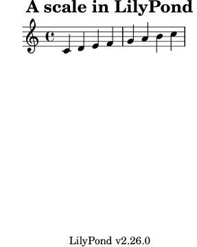

| [Top][Contents][Index] |
LilyPond — Usage
|
This file explains how to execute the programs distributed with LilyPond version 2.26.0. In addition, it suggests some “best practices” for efficient usage. |
1 Running lilypond | Operation. | |
2 Updating files with convert-ly | Updating input files. | |
3 Running lilypond-book | Integrating text and music. | |
| 4 External programs | Mixing LilyPond and other programs. | |
| 5 Suggestions for writing files | Best practices and effective bug-fixing. | |
Appendices | ||
|---|---|---|
| Appendix A GNU Free Documentation License | License of this document. | |
| Appendix B Index | ||
|
For more information about how this manual fits with the other documentation, or to read this manual in other formats, see Manuals. If you are missing any manuals, the complete documentation can be found at https://lilypond.org/. |
| [ << Top ] | [Top][Contents][Index] | [ Updating files with convert-ly >> ] |
| [ < Top ] | [ Up: Top ] | [ Normal usage > ] |
1 Running lilypond
This chapter details the technicalities of running LilyPond.
| 1.1 Normal usage | ||
| 1.2 Command-line usage | ||
| 1.3 Error messages | ||
| 1.4 Common errors |
[ << Running lilypond ] | [Top][Contents][Index] | [ Updating files with convert-ly >> ] |
[ < Running lilypond ] | [ Up: Running lilypond ] | [ Command-line usage > ] |
1.1 Normal usage
Most users run LilyPond through a GUI; if you have not done so already, please read the Tutorial. If you use an alternate editor to write LilyPond files, see the documentation for that program.
[ << Running lilypond ] | [Top][Contents][Index] | [ Updating files with convert-ly >> ] |
| [ < Normal usage ] | [ Up: Running lilypond ] | [ The PATH environment variable > ] |
1.2 Command-line usage
This section contains extra information about using LilyPond on the
command line. This may be desirable to pass extra options to the
program. In addition, there are certain extra ‘helper’ programs (such
as midi2ly) which are only available on the command line.
By ‘command line’, we mean the command line in the operating system. Windows users might be more familiar with the terms ‘DOS shell’ or ‘command shell’. macOS users might be more familiar with the terms ‘terminal’ or ‘console’.
Describing how to use this part of an operating system is outside the scope of this manual; please consult other documentation on this topic if you are unfamiliar with the command line.
You should use a command line that reads and writes Unicode in UTF-8 encoding. Today, this is the standard on Unix-like operating systems including macOS and GNU/Linux. On Windows, you can select UTF-8 by selecting an appropriate codepage: call
chcp 65001
once on the command line before running lilypond.exe.
Please consult the internet how to permanently activate UTF-8 for
the Windows
console.1
The PATH environment variable | ||
Invoking lilypond | ||
| Basic command-line options for LilyPond | ||
| Advanced command-line options for LilyPond | ||
| Environment variables | ||
| Relocation |
[ << Running lilypond ] | [Top][Contents][Index] | [ Updating files with convert-ly >> ] |
| [ < Command-line usage ] | [ Up: Command-line usage ] | [ Invoking lilypond > ] |
The PATH environment variable
[You can skip this section if you use a package manager like
MacPorts to install LilyPond; PATH should already be set up
correctly.]
Throughout the LilyPond manuals, examples simply show
lilypond as the program to call. However, this only
works if the PATH environment variable is adjusted so that
LilyPond’s binary directory is included.
Assuming that you have unpacked a LilyPond binary package for
version 2.26.0 within a directory /home/me, the binary
directory to be added to PATH is
/home/me/lilypond-2.26.0/bin
On Windows, a typical directory might be
C:\Users\me\lilypond-2.26.0\bin
Please consult the documentation for your operating system (or do
a search in the internet) how to actually modify PATH. In
case you are updating from an older LilyPond version you should
ensure that the old LilyPond binary directory is removed from
PATH; after everything is done you can check with a call to
lilypond --version whether the correct version gets found
on the command line.
If, for whatever reason, adjusting PATH is not possible or
appropriate, or if you have multiple LilyPond versions installed
in parallel, use the full path to the binary, for example
/home/me/lilypond-2.26.0/bin/lilypond music.ly
[ << Running lilypond ] | [Top][Contents][Index] | [ Updating files with convert-ly >> ] |
[ < The PATH environment variable ] | [ Up: Command-line usage ] | [ Basic command-line options for LilyPond > ] |
Invoking lilypond
The lilypond executable may be called as follows from
the command line.
lilypond [option]… file…
When invoked with a file name that has no extension, the .ly
extension is tried first. To read input from stdin, use a
dash (-) for file.
Note: On Windows prior to Windows 10 1903, LilyPond cannot handle Unicode file names.
When filename.ly is processed it produces filename.pdf as output by default. Several files can be specified; they are each processed independently.2
If filename.ly contains more than one \book block,
the rest of the scores is output in numbered files, starting with
filename-1.pdf. See Output file names how to
change the output file name and the file name suffix.
Using LilyPond with standard shell features
Since LilyPond is a command-line application, features of the ‘shell’ used for calling LilyPond can also be put to good use.
For example,
lilypond *.ly
processes all LilyPond files in the current directory.
Redirecting the console output (e.g., to a file) may also be useful:
lilypond file.ly 1> stdout.txt lilypond file.ly 2> stderr.txt lilypond file.ly &> all.txt
The above commands divert ‘normal’ output, ‘errors’ only, or ‘everything’, respectively, to text files. Consult the documentation for your particular shell, Command (Windows), Terminal or Console applications (macOS) to check whether output redirection is supported or if the syntax is different.
The following example searches and processes all input files in the current directory and all directories below it recursively. The output files are located in the same directory that the command was run in, rather than in the same directories as the original input files.
find . -name '*.ly' -exec lilypond '{}' \;
This should also work for macOS users.
A Windows user would run
forfiles /s /M *.ly /c "cmd /c lilypond @file"
entering these commands in a command prompt usually found under
Start > Accessories > Command Prompt, or
by typing in the search window ‘command prompt’.
Alternatively, an explicit path to the top-level of your folder
containing all the sub-folders that have input files in them can be
stated using the /p option;
forfiles /s /p C:\Documents\MyScores /M *.ly /c "cmd /c lilypond @file"
If there are spaces in the path to the top-level folder, then the whole path needs to be inside double quotes;
forfiles /s /p "C:\Documents\My Scores" /M *.ly /c "cmd /c lilypond @file"
[ << Running lilypond ] | [Top][Contents][Index] | [ Updating files with convert-ly >> ] |
[ < Invoking lilypond ] | [ Up: Command-line usage ] | [ Advanced command-line options for LilyPond > ] |
Basic command-line options for LilyPond
Please bear in mind that option arguments with spaces in it must
be quoted. For example, to write LilyPond’s output to a
directory called ‘foo bar’, a user must add -o "foo
bar" (or --output="foo bar") to the command-line arguments
of lilypond. Double quotes around such arguments work
with virtually all command-line interpreters on both Windows and
Unix-like operating systems (including macOS).
The following options are supported.
-d,--define-default=var[=val]-e,--evaluate=exprEvaluate the Scheme expression expr before parsing any .ly files. Multiple -e options may be given, they are evaluated sequentially.
The expression is evaluated in the
guile-usermodule, so if you want to use a definition like(define-public a 42)as expr, uselilypond -e "(define-public a 42)"
on the command line, and include
#(use-modules (guile-user))
at the top of the .ly file.
-E,--epsGenerate EPS files.
This option is equivalent to specifying
-dseparate-page-formats=eps -dtall-page-formats=eps.-f,--format=formatThe format of the (main) output file or files. Possible values for format are
ps,pdf,pngorsvg.Example:
lilypond -fpng foo.lySVG internally uses a specific backend, and therefore cannot be obtained in the same run as other formats; using
-fsvgor--svgis actually equivalent to using the-dbackend=svgoption. See Advanced command-line options for LilyPond.-h,--helpShow a summary of usage.
-H,--header=fieldDump a header field to file BASENAME.field.
As an example, let’s assume that you have an input file foo.ly containing
\header { title = "bar" } \score { c1 }The command
lilypond -H title foo.ly
then creates a plain text file foo.title containing the string
bar.-i,--init=fileSet init file to file (default: init.ly).
-I,--include=directoryAppend directory to the search path for input files with relative paths. By default, only the current working directory gets searched.
Multiple -I options may be given. The search starts in the current working directory, and if the file to be included is not found the search continues in the directory given by the first -I option, then the directory in the second -I option, and so on.
Note: Using the tilde character (
~) with the -I switch may produce unexpected results in some shells.Windows users need to include a trailing slash for the directory’s path.
-j,--jail=user,group,jail,dir[This option is only available if your operating system supports the
chrootfunctionality. In particular, Windows doesn’t support it.]Run
lilypondin a chroot jail.The --jail option can be used for security when LilyPond formatting is being provided via a web server, or whenever LilyPond executes commands sent by external sources (see Advanced command-line options for LilyPond). Because LilyPond provides the ability to run Guile programs, it is essential in such scenarios to run it in a sandboxed way so that the file being compiled does not wreak havoc on the system, for example with
% too dangerous to write correctly #(s ystem "rm -rf /") % malicious but not destructive { c4^$(ly:gulp-file "/etc/passwd") }--jail is one way to achieve sandboxing. Another one is running LilyPond in a Docker container.
The --jail option works by changing the root of
lilypondto jail just before starting the actual compilation process. The user and group are then changed to match those provided, and the current directory is changed to dir. This setup guarantees that it is not possible (at least in theory) to escape from the jail. Note that for --jail to work,lilypondmust be run as root, which is usually accomplished in a safe way usingsudo.Setting up a jail can be a relatively complex matter, as we must be sure that LilyPond is able to find whatever it needs to compile the source inside the jail itself. A typical chroot jail comprises the following steps:
- Setting up a separate filesystem
A separate filesystem should be created for LilyPond, so that it can be mounted with safe options such as
noexec,nodev, andnosuid. In this way, it is impossible to run executables or to write directly to a device from LilyPond. If you do not want to create a separate partition, just create a file of reasonable size and use it to mount a loop device. A separate filesystem also guarantees that LilyPond cannot write more space than it is allowed.- Setting up a separate user
A separate user and group (say,
lily/lily) with low privileges should be used to run LilyPond inside the jail. There should be a single directory writable by this user, which should be passed in dir.- Preparing the jail
LilyPond needs to read a number of files while running. All these files are to be copied into the jail, under the same path they appear in the real root filesystem. The entire content of the LilyPond installation (e.g., /usr/share/lilypond) should be copied.
If problems arise, the simplest way to trace them down is to run LilyPond using
strace, which allows you to determine which files are missing.- Running LilyPond
In a jail mounted with
noexecit is impossible to execute any external program. Therefore LilyPond must be run with a backend that does not require any such program. As we have already mentioned, it must be run with superuser privileges (which, of course, it loses immediately), possibly usingsudo. It is also good practice to limit the number of seconds of CPU time LilyPond can use (e.g., usingulimit -t), and, if your operating system supports it, the amount of memory that can be allocated.
-l,--loglevel=levelSet the verbosity of the console output to level. Possible values are:
NONENo output at all, not even error messages.
ERROROnly error messages, no warnings or progress messages.
WARNWarnings and error messages, no progress.
BASICBasic progress messages (success), warnings and errors.
PROGRESSAll progress messages, warnings and errors.
INFOProgress messages, warnings, errors and further execution information. This is the default.
DEBUGAll possible messages, including verbose debug output.
-o,--output=file-o,--output=folderSet the default output file to file or, if a folder with that name exists, direct the output to folder, taking the file name from the input file. The appropriate suffix is added (e.g., .pdf for PDF) in both cases.
-O,--pspdfopt=key ¶-
Set the PS/PDF output optimization to key. Possible values are:
sizeGenerate a very small PS/EPS/PDF document. This is the default.
Using this value is equivalent to setting LilyPond’s Scheme command-line options
-dmusic-font-encodings="#f"and-dgs-never-embed-fonts="#f".TeXProduce files that are optimized for inclusion in pdfTeX, LuaTeX, or XeTeX documents.
Using this value is equivalent to setting LilyPond’s Scheme command-line options
-dmusic-font-encodings="#t"and-dgs-never-embed-fonts="#f".TeX-GSIf you want to include more than one PDF generated by LilyPond in a TeX document, use this option and postprocess the PDF generated by TeX with Ghostscript.
Using this value is equivalent to setting LilyPond’s Scheme command-line options
-dmusic-font-encodings="#t"and-dgs-never-embed-fonts="#t".
--psGenerate PostScript. This option is equivalent to
-fps.--pngGenerate pictures of each page, in PNG format. This option is equivalent to
-fpng.The resolution of the image may be set to N DPI with
-dresolution=N
--pdfGenerate PDF. This is the default, being equivalent to
-fpdf.-s,--silentShow no progress, only error messages. This is equivalent to
-lERROR.--svgGenerate SVG files for each page. This option is equivalent to
-fsvg.-v,--versionShow version information.
-V,--verboseBe verbose: show full paths of all files read, give timing information, etc. It is equivalent to
-lDEBUG.-w,--warrantyShow the warranty with which GNU LilyPond comes. (It comes with NO WARRANTY!)
[ << Running lilypond ] | [Top][Contents][Index] | [ Updating files with convert-ly >> ] |
| [ < Basic command-line options for LilyPond ] | [ Up: Command-line usage ] | [ Environment variables > ] |
Advanced command-line options for LilyPond
Option -d is the command-line interface to LilyPond’s Scheme
function ly:set-option. This means that all options listed
here can also be set within .ly files.
-d,--define-default=option-name[=value]-d,--define-default=no-option-nameSet the equivalent internal Scheme symbol option-name to value. For example, the command-line option
-dbackend=svg
is equivalent to
#(ly:set-option 'backend 'svg)
in a LilyPond input file.
If value is not supplied, use
#tas the value. The prefixno-may be added to option-name to switch ‘off’ an option, providing#fas the value. For example,-dpoint-and-click="#f"
is the same as
-dno-point-and-click
[Note that the ‘#’ character introduces a comment in many shells. For this reason it is recommended to always quote expressions that contain it.]
The following table lists all supported option names together with
its values. Within Scheme code, option values can be read using
function ly:get-option.
anti-alias-factornumRender at a higher resolution (using factor num, which must be a positive integer ≤ 8) and scale down the result to prevent ‘jaggies’ in PNG images. Default:
1.aux-filesboolIf bool is
#t, create .tex, .texi, and .count files. This option is primarily for use bylilypond-book. Default:#f.backendsymbolUse symbol as the backend for LilyPond output. Possible values are:
psThis is the default setting. PostScript files include TTF, Type1, and OTF fonts. No ‘subsetting’ of these fonts is done. Be aware that using ‘oriental’ character sets like Japanese can lead to very large file sizes.
For PDF output, the
psbackend is used, too; the resulting PS data is post-processed by Ghostscript’sps2pdfscript, which also does font subsetting by default.cairoThis creates graphics output throught the Cairo library. This backend can output PS, EPS, PDF, PNG, and SVG.
svgScalable Vector Graphics. A single SVG file is created for every page of output. Music glyphs are encoded as vector graphics, but text fonts are not embedded in the SVG files. Any SVG viewer will therefore need the relevant text fonts to be available to it for proper rendering of both text and lyrics. It is recommended to not use font ‘lists’ or ‘aliases’ in case an SVG viewer is unable to handle them.
clip-systemsboolIf bool is
#t, extract music fragments out of a score. This requires that theclip-regionsfunction has been defined within the\layoutblock. See Extracting fragments of music. No fragments are extracted though if used with the -dno-print-pages option. Default:#f.compile-scheme-codeboolUse the Guile compiler to run Scheme code, instead of the evaluator. For more information, see Debugging Scheme code.
cropboolIf bool is
#t, a second PDF file gets created (with extension .cropped.pdf), together with a rendered image of it (with extension .cropped.png). This output file fits all the music and headers, without margins, into a single, possibly tall page. If option --svg is set, an additional SVG file (with extension .cropped.svg) is produced instead. If option --eps or --ps is set, a cropped EPS file (with extension .cropped.eps) is produced instead of a cropped PDF. Default:#f.As a feature of LilyPond, the dimensions of the cropped output file are always rounded up to integer (PostScript) big points; this might cause a little bit of whitespace at the right margin. To avoid that, set the
line-widthpaper variable to an integer big point value like450\bp.Note that currently this option is not well suited for multi-system output since vertical space between systems gets removed.
datadirstringPrefix for data files. This is a read-only option; setting it has no effect.
debug-evalboolIf bool is
#t, use the debugging Scheme evaluator, which prints backtraces with line numbers on errors. Default:#f, or#twhen using--verbose.debug-skylinesboolIf bool is
#t, debug skylines. Default:#f.delete-intermediate-filesboolIf bool is
#t, delete the unusable, intermediate .ps files created during compilation. Default:#t.embed-source-codeboolIf bool is
#t, embed the LilyPond source files inside the generated PDF document. Default:#f.eps-box-paddingnumPad left edge of the output EPS bounding box by num millimeters. Default:
#f(meaning no bounding box padding).firststringOnly show music with a length given by string at the beginning. This is equivalent to
showFirstLength = string
if inserted at the beginning of the input file. If both -dfirst and
showFirstLengthare set, the command-line option takes precedence. See Extracting fragments of music. Default:#f.font-export-dirstringSet directory for exporting fonts as PostScript files to string. This is useful when you want to create a PDF without embedded fonts first and later embed the fonts with Ghostscript as shown below.
$ lilypond -dfont-export-dir=fontdir \ -dgs-never-embed-fonts foo.ly $ gs -q -dBATCH -dNOPAUSE -sDEVICE=pdfwrite \ -sOutputFile=foo.embedded.pdf foo.pdf fontdir/*.font.psNote: Unlike
font-ps-resdir, this method cannot embed CID fonts with Ghostscript 9.26 and later.Note: Similar to
font-ps-resdir, this option skips TrueType fonts because embedding TrueType fonts might cause garbled characters. To avoid garbling characters, usegs-never-embed-fonts, as this embeds TrueType fonts despite its name.Default:
#f(meaning no export directory).font-ps-resdirstringSet directory (as string) to build a subset of the PostScript resource directory to be used for embedding fonts later. This is useful when you want to create a PDF without embedded fonts first and later embed the fonts with Ghostscript as shown below.
$ lilypond -dfont-ps-resdir=resdir \ -dgs-never-embed-fonts foo.ly $ gs -q -dBATCH -dNOPAUSE -sDEVICE=pdfwrite \ -I resdir -I resdir/Font \ -sOutputFile=foo.embedded.pdf foo.pdfNote: It is better not to specify a directory that contains the name Resource because it has a special meaning when specified with the
-Ioption for Ghostscript.Note: Unlike
font-export-dir, this method can embed CID fonts with Ghostscript 9.26 and later.Note: Similar to
font-export-dir, this option skips TrueType fonts because embedding TrueType fonts might cause garbled characters. To avoid garbling characters, usegs-never-embed-fonts, as this embeds TrueType fonts despite its name.Default:
#f(meaning no subset directory).gs-load-fontsboolIf bool is
#t, load fonts via Ghostscript. This option makes LilyPond’s output files contain only references to all fonts, which must be resolved to real fonts in a post-processing step by Ghostscript. Default:#f.gs-load-lily-fontsboolIf bool is
#t, load LilyPond fonts via Ghostscript. This option makes LilyPond’s output files contain only references to its music fonts, which must be resolved to real fonts in a post-processing step by Ghostscript. All other fonts are still output as usual. Default:#f.gs-never-embed-fontsboolIf bool is
#t, make Ghostscript embed only TrueType fonts and no other font format. Default:#f.helpboolIf bool is
#t, show a help screen and exit. Default:#f.include-book-title-previewboolIf bool is
#t, include book titles in preview images. Default:#t.include-eps-fontsboolIf bool is
#t, include fonts in separate-system EPS files. Default:#t.include-settingsstringInclude file string for global settings, which is included before the score is processed. This option can be passed multiple times to include several files. Default: not set (meaning no global settings file).
job-countnumProcess in parallel, using num jobs (num being a positive integer). Default:
#f(meaning no parallel processing).laststringOnly show music with a length given by string at the end. This is equivalent to
showLastLength = string
if inserted at the beginning of the input file. If both -dlast and
showLastLengthare set, the command-line option takes precedence. See Extracting fragments of music. Default:#f.log-filestringRedirect output to the log file string.log. Default:
#f(meaning no log file).max-markup-depthnumSet maximum depth for the markup tree to value num (being a non-negative integer). If a markup has more levels, assume it will not terminate on its own, print a warning, and return a null markup instead. Default:
1024.midi-extensionstringSet the default file extension for MIDI output files to .string. Default:
"midi".music-strings-to-pathsboolIf bool is
#t, convert text strings to paths when glyphs belong to a music font. Default:#f.paper-sizestringSet default paper size to string. Default:
"a4".pixmap-formatstringSet Ghostscript’s output format for pixel images to string. Default:
"png16m".png-widthwidthpng-heightheightFor PNG output, set the width and height (in pixels) of the created image file. If one of the options is missing, the other dimension is computed according to the EPS bounding box, retaining the aspect ratio. Both width and height must be non-negative integers.
In addition to --png, either --eps, -dcrop, or -dpreview should be used to get proper image scaling without clipping.
Option -dresolution is ignored.
Note that there is a bug in Ghostscript versions up to 9.52 for these two options: It produces empty PNG images if the height is larger than the width.
Default:
0for both width and height (meaning both dimensions are derived from the EPS bounding box).point-and-clickvalueIf value is
#t, add ‘point & click’ links to PDF and SVG output.There are more possible option values; see Point and click. Default:
#t.previewboolIf bool is
#t, create preview images in addition to normal output. Default:#f.For input file name file and output format fmt, it generates an output file having the name file
.preview.fmt, containing the titles and the first system of music. If\bookor\bookpartblocks are used, the titles of\book,\bookpartor\scorewill appear in the output, including the first system of every\scoreblock if the\papervariableprint-all-headersis set to#t.To suppress the usual output, use the -dprint-pages or -dno-print-pages options according to your requirements.
print-pagesboolIf bool is
#t, generate full pages. Default:#t.Option -dno-print-pages is useful in combination with -dpreview or -dcrop.
protected-scheme-parsingboolIf bool is
#t, continue when errors in inline Scheme code are caught in the parser. If set to#f, halt on errors and print a stack trace. Default:#t.read-file-listboolIf bool is
#t, handle all file arguments on the command line as lists of LilyPond input files to be processed, with one input file per line in these lists. Default:#f.relative-includesboolWhen processing an
\includecommand, look for the included file relative to the current file if bool is#t. If set to#f, look for the file relative to the root file. Default:#t.resolutionnumSet resolution for generating
PNGpixmaps to num dpi (which must be a positive number). Default:101.separate-log-filesboolFor input files file1.ly, file2.ly, …, output log data to files file1.log, file2.log, …, if bool is
#t. Default:#f.separate-page-formatsstringComma-separated list of formats (
svg,pdf,png, oreps) to use for the separate page images inlilypond-book. See Other programs. Default:#f.show-available-fontsboolIf bool is
#t, list available font names as delivered by the fontconfig library. Appended to this list LilyPond displays the configuration settings of fontconfig itself. Default:#f.staff-sizenumSet global staff size to num points (which must be a positive number). This is equivalent to
#(set-global-staff-size num)
if inserted at the beginning of the input file. Default: 20pt.
strip-output-dirboolIf bool is
#t, don’t use the directory part from input file paths while constructing output file names. Default:#t.strokeadjustboolIf bool is
#t, force PostScript stroke adjustment. This option is mostly relevant when a PDF is generated from PostScript output (stroke adjustment is usually enabled automatically for low-resolution bitmap devices). Without this option, PDF previewers tend to produce widely inconsistent stem widths at resolutions typical for screen display. However, the option does not noticeably affect print quality and causes large file size increases in PDF files. Default:#f.tall-page-formatsstringComma-separated list of formats (
svg,pdf,png, oreps) to use for the ‘tall page’ image inlilypond-book. See Other programs. Default:#f.use-paper-size-for-pageboolIf bool is
#t, each page is set to the paper size, possibly cropping parts that extend beyond the paper. Setting it#fresizes the page to contain the content as necessary. Default:#t.verboseboolVerbosity level. This is a read-only option; setting it has no effect.
warning-as-errorboolIf bool is
#t, change all warning and ‘programming error’ messages into errors. Default:#f.
[ << Running lilypond ] | [Top][Contents][Index] | [ Updating files with convert-ly >> ] |
| [ < Advanced command-line options for LilyPond ] | [ Up: Command-line usage ] | [ Relocation > ] |
Environment variables
lilypond recognizes the following environment variables:
LILYPOND_DATADIRThis specifies a directory where locale messages and data files are looked up by default, overriding locations defined either at compile-time or computed dynamically at run-time (see Relocation). The directory should contain subdirectories called ly, ps, tex, etc.
LILYPOND_LOCALEDIRSpecify the directory where locale-specific files are located. This overrides the value derived from
LILYPOND_DATADIR.LILYPOND_RELOCDIRSpecify the directory where relocation files are located. This overrides the value derived from the location of the
lilypondbinary.LANGThe language for LilyPond data sent to
stdoutandstderr, for example progress reports, warning messages, or debug output. Example:LANG=de.LILYPOND_LOGLEVELThe default loglevel. If LilyPond is called without an explicit loglevel (i.e., no --loglevel command-line option), this value is used.
LILYPOND_GC_YIELDA variable, as a percentage, that tunes memory management behavior. A higher value means the program uses more memory, a smaller value means more CPU time is used. The default value is
70.TMPDIRThis specifies the temporary directory in GNU/Linux and macOS. Default is /tmp. It is the directory where intermediate files (such as PostScript files) are saved during compilation. Overriding this variable might be useful, for example, if the user running lilypond does not have write access to the default temporary directory. Example:
TMPDIR=~/foo.
[ << Running lilypond ] | [Top][Contents][Index] | [ Updating files with convert-ly >> ] |
| [ < Environment variables ] | [ Up: Command-line usage ] | [ Relocation files > ] |
Relocation
Most programs in the Unix world use default directories for its data that are determined at configure time before compilation. LilyPond is no exception; for example, a typical installation puts the lilypond binary into /usr/bin and all files specific to LilyPond into subdirectories of /usr/share/lilypond/2.26.0/ (assuming that the current version is 2.26.0).
While this approach works fine for manual compilation and platforms that come with standardized package managers, it can cause issues where such managers are not common or not used by default. Typical examples of such platforms are Windows and macOS, where users expect that application bundles can be installed anywhere.
The common solution to this problem is relocation support: Instead of using hard-coded paths to data files, locations of the necessary support files are computed at run time relative to the executed binary.
| Relocation files | ||
| Relocation algorithm |
[ << Running lilypond ] | [Top][Contents][Index] | [ Updating files with convert-ly >> ] |
| [ < Relocation ] | [ Up: Relocation ] | [ Relocation algorithm > ] |
Relocation files
There’s actually a second mechanism for run-time configuration:
LilyPond heavily relies on external programs and libraries, in
particular the ‘FontConfig’ and ‘Guile’ libraries to find
system fonts and handle Scheme files, respectively, and the
gs program to convert PS data to PDF files. All of them
must be configured also to locate its relevant data files. To do
that, the lilypond program parses all files in a
directory called relocate (if it exists; see below where
this directory is searched for) to manipulate environment
variables, which in turn control those external libraries and
programs. The format of such relocation files is simple; each
line has the syntax
command key=value
and empty lines get ignored.
The command directive is one of the following.
setUncondionally set environment variable key to value. This overrides a previously set value.
set?Set environment variable key to value only if key isn’t defined yet. In other words, it doesn’t override a previously set value.
setdirIf value is a directory, unconditionally set environent variable key to value. Otherwise, emit a warning.
setfileIf value is a file, unconditionally set environent variable key to value. Otherwise, emit a warning.
prependdirPrepend directory value to the list of directories in environment variable key. If key doesn’t exist it gets created.
Environment variables (marked with a leading dollar sign) are allowed in value and get expanded before the directive is executed.
Here are two examples of relocation file entries.
set? FONTCONFIG_FILE=$INSTALLER_PREFIX/etc/fonts/fonts.conf prependdir GUILE_LOAD_PATH=$INSTALLER_PREFIX/share/guile/1.8
Multiple lines setting the same environment variable should be avoided in relocation files since the parsing order of files in the relocate directory is arbitrary.
[ << Running lilypond ] | [Top][Contents][Index] | [ Updating files with convert-ly >> ] |
| [ < Relocation files ] | [ Up: Relocation ] | [ Error messages > ] |
Relocation algorithm
LilyPond uses the following algorithm to find its data files.
- Compute the directory where the currently executed
lilypondbinary is located. Let’s call thisbindir. Set (internal) environment variableINSTALLER_PREFIXto bindir/.. (i.e., the parent directory ofbindir). - Check environment variable
LILYPOND_DATADIR. If it is set, use its value for LilyPond’s data directory,datadir. Otherwise use either $INSTALLER_PREFIX/share/lilypond/version (with version being the current LilyPond version) or $INSTALLER_PREFIX/share/lilypond/current. - Check environment variable
LILYPOND_LOCALEDIR. If it is set, use its value for LilyPond’s locale data directory,localedir. Otherwise use $INSTALLER_PREFIX/share/locale. - Check environment variable
LILYPOND_RELOCDIR. If it is set, use its value for the directory of LilyPond’s relocation files,relocdir. Otherwise use $INSTALLER_PREFIX/etc/relocate. - If
datadirdoesn’t exist, use a compile-time value instead. Ditto forlocaledir(but not forrelocdir, since it doesn’t make sense to have that). - If
relocdirexists, process all files in this directory (see Relocation files).
[ << Running lilypond ] | [Top][Contents][Index] | [ Updating files with convert-ly >> ] |
| [ < Relocation algorithm ] | [ Up: Running lilypond ] | [ Common errors > ] |
1.3 Error messages
Different error messages can appear while compiling a file:
- Warning ¶
Something looks suspect. If you are requesting something out of the ordinary then you will understand the message, and can ignore it. However, warnings usually indicate that something is wrong with the input file.
- Error ¶
Something is definitely wrong. The current processing step (parsing, interpreting, or formatting) will be finished, but the next step will be skipped.
- Fatal error ¶
Something is definitely wrong, and LilyPond cannot continue. This happens rarely. The most usual cause is misinstalled fonts.
- Scheme error ¶
-
Errors that occur while executing Scheme code are caught by the Scheme interpreter. If running with the verbose option (-V or --verbose) then a call trace of the offending function call is printed.
- Programming error ¶
There was some internal inconsistency. These error messages are intended to help the programmers and debuggers. Usually, they can be ignored. Sometimes, they come in such big quantities that they obscure other output.
- Aborted (core dumped) ¶
This signals a serious programming error that caused the program to crash. Such errors are considered critical. If you stumble on one, send a bug-report.
If warnings and errors can be linked to some part of the input file, then error messages have the following form
filename:lineno:columnno: message offending input line
A line-break is inserted in the offending line to indicate the column where the error was found. For example,
test.ly:2:19: error: not a duration: 5
{ c'4 e'
5 g' }
These locations are LilyPond’s best guess about where the warning or error occurred, but (by their very nature) warnings and errors occur when something unexpected happens. If you can’t see an error in the indicated line of your input file, try checking one or two lines above the indicated position.
Please note that diagnostics can be triggered at any point during the many stages of processing. For example if there are parts of the input that are processed multiple times (i.e., in midi and layout output), or if the same music variable is used in multiple contexts the same message may appear several times. Diagnostics produced at a ‘late’ stage (i.e., bar checks) might also be issued multiple times.
See Common errors for more information about errors.
[ << Running lilypond ] | [Top][Contents][Index] | [ Updating files with convert-ly >> ] |
| [ < Error messages ] | [ Up: Running lilypond ] | [ Music runs off the page > ] |
1.4 Common errors
The error conditions described below occur often, yet the cause is not obvious or easily found. Once seen and understood, they are easily handled.
[ << Running lilypond ] | [Top][Contents][Index] | [ Updating files with convert-ly >> ] |
| [ < Common errors ] | [ Up: Common errors ] | [ An extra staff appears > ] |
Music runs off the page
Music running off the page over the right margin or appearing unduly compressed is almost always due to entering an incorrect duration on a note, causing the final note in a measure to extend over the bar line. It is not invalid if the final note in a measure does not end on the automatically entered bar line, as the note is simply assumed to carry over into the next measure. But if a long sequence of such carry-over measures occurs the music can appear compressed or may flow off the page because automatic line breaks can be inserted only at the end of complete measures, i.e., where all notes end before or at the end of the measure.
Note: An incorrect duration can cause line breaks to be inhibited, leading to a line of highly compressed music or music which flows off the page.
The incorrect duration can be found easily if bar checks are used, see Bar and bar number checks.
If you actually intend to have a series of such carry-over measures you will need to insert an invisible bar line where you want the line to break. For details, see Bar lines.
[ << Running lilypond ] | [Top][Contents][Index] | [ Updating files with convert-ly >> ] |
| [ < Music runs off the page ] | [ Up: Common errors ] | [ Error message Unbound variable % > ] |
An extra staff appears
If contexts are not created explicitly with \new or
\context, they will be silently created as soon as a
command is encountered which cannot be applied to an existing
context. In simple scores the automatic creation of contexts is
useful, and most of the examples in the LilyPond manuals take
advantage of this simplification. But occasionally the silent
creation of contexts can give rise to unexpected new staves or
scores. For example, it might be expected that the following code
would cause all note heads within the following staff to be
colored red, but in fact it results in two staves with the note
heads remaining the default black in the lower staff.
\override Staff.NoteHead.color = #red \new Staff { a' }![[image of music]](c3/lily-eebc3507.png)
This is because a Staff context does not exist when the
override is processed, so one is implicitly created and the override
is applied to it, but then the \new Staff command creates
another, separate, staff into which the notes are placed. The
correct code to color all note heads red is
\new Staff { \override Staff.NoteHead.color = #red a' }![[image of music]](fd/lily-21542a03.png)
[ << Running lilypond ] | [Top][Contents][Index] | [ Updating files with convert-ly >> ] |
| [ < An extra staff appears ] | [ Up: Common errors ] | [ Error message FT_Get_Glyph_Name > ] |
Error message Unbound variable %
This error message will appear at the bottom of the console output or log file together with a “Guile signalled an error …” message every time a Scheme routine is called which (invalidly) contains a LilyPond rather than a Scheme comment.
LilyPond comments begin with a percent sign, (%), and must
not be used within Scheme routines. Scheme comments begin with a
semi-colon, (;).
[ << Running lilypond ] | [Top][Contents][Index] | [ Updating files with convert-ly >> ] |
| [ < Error message Unbound variable % ] | [ Up: Common errors ] | [ Warning staff affinities should only decrease > ] |
Error message FT_Get_Glyph_Name
This error messages appears in the console output or log file if an input file contains a non-ASCII character and was not saved in UTF-8 encoding. For details, see Text encoding.
[ << Running lilypond ] | [Top][Contents][Index] | [ Updating files with convert-ly >> ] |
| [ < Error message FT_Get_Glyph_Name ] | [ Up: Common errors ] | [ Error message unexpected \new > ] |
Warning staff affinities should only decrease
This warning can appear if there are no staves in the printed
output, for example if there are just a ChordName context
and a Lyrics context as in a lead sheet. The warning
messages can be avoided by making one of the contexts behave as a
staff by inserting
\override VerticalAxisGroup.staff-affinity = ##f
at its start. For details, see “Spacing of non-staff lines” in Flexible vertical spacing within systems.
Error message unexpected \new
A \score block must contain a single music expression.
If instead it contains several \new Staff,
\new StaffGroup or similar contexts introduced with \new
without them being enclosed in either curly brackets,
{ … }, or double angle brackets, << … >>,
like this:
\score {
% Invalid! Generates error: syntax error, unexpected \new
\new Staff { … }
\new Staff { … }
}
the error message will be produced.
To avoid the error, enclose all the \new statements in
curly or double angle brackets.
Using curly brackets will introduce the \new statements
sequentially:
\score { { \new Staff { a' a' a' a' } \new Staff { g' g' g' g' } } }![[image of music]](4f/lily-6ec06842.png)
but more likely you should be using double angle brackets so the new staves are introduced in parallel, i.e., simultaneously:
\score { << \new Staff { a' a' a' a' } \new Staff { g' g' g' g' } >> }![[image of music]](cd/lily-4b479304.png)
[ << Running lilypond ] | [Top][Contents][Index] | [ Updating files with convert-ly >> ] |
[ < Error message unexpected \new ] | [ Up: Common errors ] | [ Updating files with convert-ly > ] |
Warning this voice needs a \voiceXx or \shiftXx setting
If notes from two different voices with stems in the same direction occur at the same musical moment, but the voices have no voice-specific shifts specified, the warning message ‘warning: this voice needs a \voiceXx or \shiftXx setting’ will appear when compiling the LilyPond file. This warning will appear even when the notes have no visible stems, e.g., whole notes, if the stems for shorter notes at the same pitch would be in the same direction.
Remember that the stem direction depends on the position of the
note on the staff unless the stem direction is specified, for example
by using \voiceOne, etc. In this case the warning will appear
only when the stems happen to be in the same direction, i.e., when the
notes are in the same half of the staff.
By placing the notes in voices with stem directions and shifts
specified, for example by using \voiceOne, etc., these warnings
may be avoided.
Notes in higher numbered voices, \voiceThree, etc., are
automatically shifted to avoid clashing note columns. This causes a
visible shift for notes with stems, but whole notes are not visibly
shifted unless an actual clash of the note heads occurs, or when the
voices cross over from their natural order (when \voiceThree
is higher than \voiceOne, etc.).
See also
Explicitly instantiating voices, Real music example, Single-staff polyphony, Collision resolution.
[ << Running lilypond ] | [Top][Contents][Index] | [ Running lilypond-book >> ] |
[ < Warning this voice needs a \voiceXx or \shiftXx setting ] | [ Up: Top ] | [ Why does the syntax change? > ] |
2 Updating files with convert-ly
As LilyPond is improved, the syntax (input language) of some commands and functions can change. This usually results in unexpected errors, warnings, or even wrong output when input files, previously created for older versions of LilyPond, are then used with later versions.
To help with this, the convert-ly command can be used to
upgrade older input files to the newer syntax.
[ << Updating files with convert-ly ] | [Top][Contents][Index] | [ Running lilypond-book >> ] |
[ < Updating files with convert-ly ] | [ Up: Updating files with convert-ly ] | [ Command-line preliminaries > ] |
2.1 Why does the syntax change?
Syntax changes are often made to make the LilyPond input code simpler for both reading and writing, but occasionally changes are made to accommodate new features or enhancements to existing functions.
Here is a real example to illustrate this.
All \paper and \layout property names are supposed
to be written in the form
first-second-third. However, in
LilyPond version 2.11.60, it was noticed that the
printallheaders property did not follow this convention.
Should this property be left alone (confusing new users with an
inconsistent format)? Or should it be changed (annoying old users
with existing LilyPond input files)? The decision was eventually
made to change the name of the property to
print-all-headers, and by using the convert-ly
command old users had a way to automatically update their existing
input files.
Unfortunately, the convert-ly command is not capable to
manage all syntax changes. For example, accents and non-English
characters were entered using standard LaTeX notation in
versions of LilyPond before 2.6; words like ‘Noël’ (which is
‘Christmas’ in French) had to be entered as No\"el.
Starting with LilyPond 2.6, the special letter ‘ë’ must be
entered directly as a UTF-8 character. Because
convert-ly cannot convert LaTeX special characters
into UTF-8 characters, older LilyPond input files have to be
edited manually to take care of that.
The conversion rules of the convert-ly command work by
using text pattern matching and replacement (rather than
‘understanding’ the context of what it is changing within a
given input file). This has several consequences:
- The reliability of the conversion depends on the quality of each applied rule set and on the complexity of the respective change. Sometimes conversions may require additional, manual fixes, so the original input files should be kept for comparison just in case.
- Only conversions to newer syntax changes are possible: there are no rule sets to go back to older versions of LilyPond. As a consequence, input files should only be upgraded when older versions of LilyPond are no longer being maintained. Again, the original data should be kept just in case, perhaps by using version control systems like Git to help maintain multiple versions of your input files.
- LilyPond is quite robust when processing ‘creatively’ placed or
omitted whitespace, but the rules used by
convert-lyoften make some stylistic assumptions. For painless upgrades it is therefore advised to follow the input style as used in the LilyPond manuals, particularly as the examples in the manuals themselves are all upgraded using theconvert-lycommand.
[ << Updating files with convert-ly ] | [Top][Contents][Index] | [ Running lilypond-book >> ] |
| [ < Why does the syntax change? ] | [ Up: Updating files with convert-ly ] | [ Invoking convert-ly > ] |
2.2 Command-line preliminaries
This and the following sections only cover the command-line usage
of convert-ly. GUI applications like Frescobaldi have
their own interfaces to convert-ly.
By ‘command line’, we mean the command line in the operating system. Windows users might be more familiar with the terms ‘DOS shell’ or ‘command shell’. macOS users might be more familiar with the terms ‘terminal’ or ‘console’.
Describing how to use this part of an operating system is outside the scope of this manual; please consult other documentation on this topic if you are unfamiliar with the command line.
See The PATH environment variable how to set up the operating
system so that convert-ly can be used on the command
line without specifying a path.
Additional setup for Windows
[Non-Windows users can skip this section; Windows users who have a Python interpreter already installed (version 3.8 or higher) can skip this section, too.]
convert-ly is actually a Python script called
convert-ly.py. In the LilyPond binary bundle for Windows
it is located in the same directory as the lilypond.exe
binary and a Python interpreter, python.exe. Assuming that
you have unpacked version 2.26.0 within a directory
C:\Users\me and PATH is correctly set up, it would be
still necessary to say
python C:\Users\me\lilypond-2.26.0\bin\convert-ly.py myfile.ly
which is tedious to type.
Three steps are necessary to allow the omission of both the interpreter (python.exe) and the .py extension.3
- On the command line, say
assoc .py=PythonScript
to associate the extension .py with the file type ‘PythonScript’.
- As the next command, say
ftype PythonScript=C:\Users\me\lilypond-2.26.0\bin\python.exe %1 %*
to make files of type ‘PythonScript’ be handled by LilyPond’s
python.exe. You have to adjust the path to the actual location, and don’t omit the trailing ‘%1 %*’! - Modify the
PATHEXTenvironment variable and add .py to already present entries. Do this in exactly the same way as you have already done withPATH.
Now close the command line and open it again, then test whether
convert-ly --version works.
[ << Updating files with convert-ly ] | [Top][Contents][Index] | [ Running lilypond-book >> ] |
| [ < Command-line preliminaries ] | [ Up: Updating files with convert-ly ] | [ Command-line options for convert-ly > ] |
2.3 Invoking convert-ly
The convert-ly command uses the \version number
in the input file to detect older versions. In most cases it is
sufficient just to run
convert-ly -e myfile.ly
in the directory containing the input file; this upgrades
myfile.ly in-place and preserves the original file by
renaming it to myfile.ly~. The \version number in
the upgraded input file, along with any required syntax updates,
is also changed.
When run, the convert-ly command outputs the version
numbers of which conversions have been made to. If no version
numbers are listed in the output for the file, it is already up to
date and using the latest LilyPond syntax.
Note: For each new version of LilyPond, a new
convert-ly command is created. However, not every
version of LilyPond needs syntax changes for its input files from
the version before. This means that the convert-ly
command only converts input files up to the latest syntax change
it has and this, in turn, may mean that the \version
number left in the upgraded input file is sometimes lower than the
version of the convert-ly command itself.
To convert all input files in a single directory, use
convert-ly -e *.ly
as a command. To handle all input files that reside in different subdirectories, try
find . -name '*.ly' -exec convert-ly -e '{}' \;
to recursively search and convert them in the current directory and all directories below it. The converted files will be located in the same directory along with their renamed originals.
On Windows, execute
forfiles /s /M *.ly /c "cmd /c convert-ly -e @file"
instead. The forfiles command also accepts an explicit
path to the top level of your folder containing all the
sub-folders that have input files in them by using the /p
option.
forfiles /s /p C:\Documents\MyScores /M *.ly /c "cmd /c convert-ly -e @file"
If there are spaces in the path to the top-level folder, the whole path needs to be inside double quotes, for example
forfiles /s /p "C:\Documents\My Scores" /M *.ly /c "cmd /c convert-ly -e @file"
[ << Updating files with convert-ly ] | [Top][Contents][Index] | [ Running lilypond-book >> ] |
[ < Invoking convert-ly ] | [ Up: Updating files with convert-ly ] | [ Problems running convert-ly > ] |
2.4 Command-line options for convert-ly
The program is invoked as follows:
convert-ly [option]… filename…
By default, convert-ly writes its data to standard
output.
The following options can be given:
--versionShow version number and exit.
-h, --helpShow usage help and exit.
-d, --diff-version-updateIncrease the
\versionstring only if the file has actually been changed. In that case, the version header will correspond to the version after the last actual change. An unstable version number will be rounded up to the next stable version number unless that would exceed the target version number. Without this option, the version will instead reflect the last attempted conversion.-e, --editApply the conversions directly to the input file, modifying it in-place. If the original file is called myfile.ly, a backup is retained under the name myfile.ly~, i.e., a tilde character gets appended. This backup file may be a hidden file on some operating systems.
If you want the converted output to be stored under a different name, redirect the standard output to a file.
convert-ly myfile.ly > mynewfile.ly
See also option --backup-numbered.
-b, --backup-numberedWhen used with the ‘-e’ option, number the backup files so that no previous version is overwritten. Assuming the input file is called myfile.ly, try to store the backup in myfile.ly.~1~. If it exists, try myfile.ly.~2~ instead, etc. The backup files may be hidden on some operating systems.
-f, --from=from-patchlevelSet the version to convert from. If this is not set,
convert-lywill guess it on the basis of the (first)\versionstring in the file. Example: --from=2.10.25-h, --helpPrint usage help.
-l loglevel, --loglevel=loglevelSet the output verbosity to loglevel. Possible values, in upper case, are
PROGRESS(the default),NONE,WARN,ERROR, andDEBUG.-n, --no-versionNormally,
convert-lyadds a\versionindicator to the output. Specifying this option suppresses this.-c, --current-versionBy default,
convert-lyupdates the\versionstring to the lowest necessary version. If this option is given, the current LilyPond version (2.26.0) is used instead.-s, --show-rulesShow conversion descriptions and exit. The amount of information can be adjusted with options --from and --to.
-t, --to=to-patchlevelExplicitly set which
\versionto convert to, otherwise the default is the most current value. It must be higher than the starting version.convert-ly --to=2.14.1 myfile.ly
-v, --verboseDisplay rule descriptions during conversion.
-w, --warrantyShow warranty and copyright and exit.
To upgrade LilyPond fragments in Texinfo files, use
convert-ly --from=… --to=… --no-version *.itely
To see the changes in the LilyPond syntax between two versions, use
convert-ly --from=… --to=… -s
[ << Updating files with convert-ly ] | [Top][Contents][Index] | [ Running lilypond-book >> ] |
[ < Command-line options for convert-ly ] | [ Up: Updating files with convert-ly ] | [ Manual conversions > ] |
2.5 Problems running convert-ly
If an input (or output) file name contains spaces it is necessary to surround the file name with double quotes.
convert-ly "D:/My Scores/Ode.ly" > "D:/My Scores/new Ode.ly"
If the invocation of convert-ly -e *.ly fails because
the expanded command line becomes too long, the
convert-ly command may be placed in a loop instead.
This example for UNIX upgrades all .ly files in the current
directory
for f in *.ly; do convert-ly -e $f; done
For Windows, the corresponding command is
for %x in (*.ly) do convert-ly.py -e "%x"
in the command prompt window.
As discussed earlier, not all language changes are handled. In particular, automatically updating Scheme and LilyPond Scheme interfaces is quite unlikely; be prepared to tweak Scheme code manually.
2.6 Manual conversions
In theory, a program like convert-ly could handle any
syntax change. After all, a computer program interprets the old
version and the new version, so another computer program can
translate one file into another.4
However, the LilyPond project has limited resources: not all
conversions are performed automatically. If convert-ly
is not able to handle a syntax change, it emits a warning like the
following (from the 2.23.12 conversion rule).
Not smart enough to convert music following \fine. Warning: \fine no longer enforces the end of the music. If your piece has music following \fine that you want to exclude when it is unfolded, use \volta to exclude it. Please refer to the manual for details, and update manually.
[ << Updating files with convert-ly ] | [Top][Contents][Index] | [ Running lilypond-book >> ] |
| [ < Manual conversions ] | [ Up: Updating files with convert-ly ] | [ Running lilypond-book > ] |
2.7 Writing code to support multiple versions
In some cases, especially when writing library code it is desirable
to support multiple LilyPond versions across breaking syntax changes. To
do this alternative portions of code can be wrapped into conditional
expressions depending on the currently executed LilyPond version. The
Scheme function ly:version? expects a comparison operator op
and a reference version ver passed as a list of integers with up to
three elements. Missing elements are ignored so '(2 20) is
equivalent to any version of the 2.20 line of versions.
Constructs like the following are possible:
#(cond ((ly:version? > '(2 20)) (ly:message "This is code to run for LilyPond after 2.20")) ((ly:version? = '(2 19 57)) (ly:message "This will only be executed with LilyPond 2.19.57")) (else (ly:message "This will be executed in any other version")))
Usually this will be integrated in library functions to allow alternative syntax to be used, but it is also possible to use the comparison directly within the music like in the following example:
{
c' d' e' f'
#(if (ly:version? = '(2 21))
#{ \override NoteHead.color = #red #}
#{ \override NoteHead.color = #blue #})
g' a' b' c''
}
Note: This function has been introduced in LilyPond 2.21.80, so it is not possible to compare with versions earlier than that.
[ << Updating files with convert-ly ] | [Top][Contents][Index] | [ External programs >> ] |
| [ < Writing code to support multiple versions ] | [ Up: Top ] | [ An example of a musicological document > ] |
3 Running lilypond-book
If you want to add pictures of music to a document, you can simply do it the way you would do with other types of pictures. The pictures are created separately (in PostScript, PDF, or PNG format), and those are included into a LaTeX or HTML document.
lilypond-book provides a way to automate this process: This
program extracts snippets of music from your document, runs
lilypond on them, and outputs the document with pictures
substituted for the music. The line width and font size definitions for
the music are adjusted to match the layout of your document.
This is a separate program from lilypond itself, and is run
on the command line; for more information, see
Command-line usage.
This procedure may be applied to LaTeX, HTML, Texinfo or DocBook documents.
[ << Running lilypond-book ] | [Top][Contents][Index] | [ External programs >> ] |
[ < Running lilypond-book ] | [ Up: Running lilypond-book ] | [ Integrating music and text > ] |
3.1 An example of a musicological document
Some texts contain music examples. These texts are musicological treatises, songbooks, or manuals like this. Such texts can be made by hand, simply by importing a PostScript or PDF figure into the word processor. However, there is an automated procedure to reduce the amount of work involved in HTML, LaTeX, Texinfo, and DocBook documents.
A script called lilypond-book extracts the music fragments,
formats them, and puts back the resulting notation. Here we show a
small example for use with LaTeX. The example also contains
explanatory text, so we will not comment on it further.
Input
\documentclass[a4paper]{article}
\begin{document}
Documents for \verb+lilypond-book+ may freely mix music and text.
For example,
\begin{lilypond}
\relative {
c'2 e2 \tuplet 3/2 { f8 a b } a2 e4
}
\end{lilypond}
Options to control the appearance of the snippets can be added,
too. For example,
\begin{lilypond}[fragment,quote,staffsize=26,verbatim]
c'4 f16
\end{lilypond}
Larger music snippets can be put into separate files. For
example,
\lilypondfile[quote,noindent]{screech-and-boink.ly}
(If needed, replace \verb+screech-and-boink.ly+ by any \verb+.ly+ file
you put in the same directory as this file.)
\end{document}
Processing
Save the code above to a file called lilybook.lytex, then in a terminal run
> lilypond-book --output=out --pdf lilybook.lytex
lilypond-book (GNU LilyPond) 2.26.0
Reading 'lilybook.lytex'...
…lots of stuff deleted…
Writing 'out/lilybook.tex'...
> cd out
> pdflatex lilybook
This is pdfTeX, ...
(./lilybook.tex
…lots of stuff deleted…
Output written on lilypond.pdf, ...
> xpdf lilybook
(replace xpdf by your favorite PDF viewer)
Running lilypond-book and latex creates a lot
of temporary files, which would clutter up the working directory.
To remedy this, use the --output=dir option to
create the files in a separate subdirectory dir.
Because this tutorial is written in Texinfo we cannot directly show the LaTeX output of the example. In the next section, however, you can see an approximation (structure-wise) of the result.
This finishes the tutorial section.
Output
Documents for lilypond-book may freely mix music and text.
Using Texinfo syntax, this example
@lilypond
\relative {
c'2 e2 \tuplet 3/2 { f8 a b } a2 e4
}
@end lilypond
produces
![[image of music]](10/lily-a2765133.png)
Options to control the appearance of snippets can be added, too. Using LaTeX syntax, this example
\begin{lilypond}[fragment, quote, staffsize=26]
c'4 f16
\end{lilypond}
produces
![[image of music]](cd/lily-645c81c5.png)
Larger music snippets can be put into separate files. Using HTML syntax, this example
<lilypondfile quote noindent> snippets/screech-and-boink.ly </lilypondfile>
produces
![[image of music]](19/lily-6611ce84.png)
If a tagline is required, either default or custom, the
entire snippet must be enclosed in a \book { } construct.
\book { \header { title = "A scale in LilyPond" } \relative { c' d e f g a b c } }

[ << Running lilypond-book ] | [Top][Contents][Index] | [ External programs >> ] |
| [ < An example of a musicological document ] | [ Up: Running lilypond-book ] | [ LaTeX > ] |
3.2 Integrating music and text
Here we explain in detail how to integrate LilyPond with various output formats.
| 3.2.1 LaTeX | ||
| 3.2.2 Texinfo | ||
| 3.2.3 HTML | ||
| 3.2.4 DocBook |
[ << Running lilypond-book ] | [Top][Contents][Index] | [ External programs >> ] |
| [ < Integrating music and text ] | [ Up: Integrating music and text ] | [ Texinfo > ] |
3.2.1 LaTeX
LaTeX is the de-facto standard for publishing layouts in the exact sciences. It is built on top of the TeX typesetting engine, providing the best typography available anywhere.
See The Not So Short Introduction to LaTeX for an overview on how to use LaTeX.
lilypond-book provides the following commands and environments to
include music in LaTeX files:
- the
\lilypond{…}command to directly enter short LilyPond code, - the
\begin{lilypond}…\end{lilypond}environment to directly enter longer LilyPond code, - the
\lilypondfile{…}command to insert a LilyPond file, - the
\musicxmlfile{…}command to insert a MusicXML file, which gets processed bymusicxml2lyandlilypond.
In the input file, music is specified with any of the following commands:
\begin{lilypond}[options,go,here]
YOUR LILYPOND CODE
\end{lilypond}
\lilypond[options,go,here]{ YOUR LILYPOND CODE }
\lilypondfile[options,go,here]{filename}
\musicxmlfile[options,go,here]{filename}
Additionally, \lilypondversion displays the current version
of LilyPond.
Running lilypond-book yields a file that can be further
processed with LaTeX.
We show some examples here. The lilypond environment
\begin{lilypond}[quote,fragment,staffsize=26]
c'4 d' e' f' g'2 g'
\end{lilypond}
produces
![[image of music]](23/lily-b4fbd4bd.png)
The short version
\lilypond[quote,fragment,staffsize=11]{<c' e' g'>}
produces
![[image of music]](9a/lily-8a3cd14c.png)
The default line width of the music is computed by examining the
commands in the document preamble (that is, the part of the document before
\begin{document}). The lilypond-book command sends
these to LaTeX to find out how wide the text is. The line width for
music fragments is then adjusted to the text width. Note that this
heuristic algorithm can fail easily; in such cases it is necessary to
use the line-width music fragment option.
Note: Make sure that your preamble actually compiles without
errors, otherwise line width detection will fail. You can test
this by directly processing your document with LaTeX, using an
empty \begin{document} ... \end{document} block.
If you use a landscape paper format, be sure to add the keyword
landscape to the option list of the \documentclass
macro.5
Each snippet calls the following macros if they have been defined by the user:
-
\preLilyPondExampleis called before the music, -
\postLilyPondExampleis called after the music, -
\betweenLilyPondSystem[1]is called between systems iflilypond-booksplits the snippet into several chunks. It must be defined as taking one parameter, which is the number of files already included in this snippet. The default is to simply insert\linebreak.
Selected snippets
Sometimes it is useful to display music elements (such as ties and slurs) as if they continued after the end of the fragment. This can be done by breaking the staff and suppressing inclusion of the rest of the LilyPond output.
In LaTeX, define \betweenLilyPondSystem in such a way that
inclusion of other systems is terminated once the required number of
systems are included. Since \betweenLilyPondSystem is first
called after the first system, including only the first system
is trivial.
\def\betweenLilyPondSystem#1{\endinput}
\begin{lilypond}[fragment]
c'1\( e'( c'~ \break c' d) e f\)
\end{lilypond}
If a greater number of systems is requested, a TeX conditional must
be used before \endinput. In this example, replace value 2 by
the number of systems you want in the output.
\def\betweenLilyPondSystem#1{
\ifnum#1<2\else\expandafter\endinput\fi
}
(Since \endinput immediately stops the processing of the current
input file we need \expandafter to delay the call of \endinput
after executing \fi so that the \if ... \fi clause is
balanced.)
Remember that the definition of \betweenLilyPondSystem is
effective until the current group is finished (such as the LaTeX
environment) or is overridden by another definition (which it is, in
most cases, for the rest of the document). To reset your
definition, write
\let\betweenLilyPondSystem\undefined
in your LaTeX source.
This may be simplified by defining a TeX macro
\def\onlyFirstNSystems#1{
\def\betweenLilyPondSystem##1{%
\ifnum##1<#1\else\expandafter\endinput\fi}
}
and then saying only how many systems you want before each fragment,
\onlyFirstNSystems{3}
\begin{lilypond}…\end{lilypond}
\onlyFirstNSystems{1}
\begin{lilypond}…\end{lilypond}
See also
There are specific lilypond-book command-line options and
other details to know when processing LaTeX documents, see
Invoking lilypond-book.
[ << Running lilypond-book ] | [Top][Contents][Index] | [ External programs >> ] |
| [ < LaTeX ] | [ Up: Integrating music and text ] | [ HTML > ] |
3.2.2 Texinfo
Texinfo is the standard format for documentation of the GNU project. An example of a Texinfo document is this manual. The HTML, PDF, and Info versions of the manual are made from the Texinfo document.
lilypond-book provides the following commands and environments to
include music in Texinfo files:
- the
@lilypond{…}command to directly enter short LilyPond code, - the
@lilypond…@end lilypondenvironment to directly enter longer LilyPond code, - the
@lilypondfile{…}command to insert a LilyPond file, - the
@musicxmlfile{…}command to insert a MusicXML file, which gets processed bymusicxml2lyandlilypond.
In the input file, music is specified with any of the following commands
@lilypond[options,go,here]
YOUR LILYPOND CODE
@end lilypond
@lilypond[options,go,here]{ YOUR LILYPOND CODE }
@lilypondfile[options,go,here]{filename}
@musicxmlfile[options,go,here]{filename}
Additionally, @lilypondversion displays the current version
of LilyPond.
All of the above commands must start a line (possibly preceded by
whitespace), even if used with the inline fragment option. There
must be also no text after the closing brace (for
@lilypond{...}) or @end lilypond.
When lilypond-book is run on it, this results in a Texinfo
file (with extension .texi) containing @image tags for
HTML, Info and printed output. lilypond-book generates images
of the music in EPS and PDF formats for use in the printed output, and
in PNG format for use in HTML and Info output.
We show some examples here. The lilypond environment
@lilypond[quote,fragment] c'4 d' e' f' g'2 g' @end lilypond
produces
The short version
@lilypond[quote,fragment,staffsize=11]{<c' e' g'>}
produces
See also
There are specific lilypond-book command-line options and
other details to know when processing Texinfo documents, see
Invoking lilypond-book.
[ << Running lilypond-book ] | [Top][Contents][Index] | [ External programs >> ] |
| [ < Texinfo ] | [ Up: Integrating music and text ] | [ DocBook > ] |
3.2.3 HTML
lilypond-book provides the following commands and environments to
include music in HTML files:
- the
<lilypond … />command to directly enter short LilyPond code, - the
<lilyond>…</lilypond>environment to directly enter longer LilyPond code, - the
<lilypondfile>…</lilypondfile>command to insert a LilyPond file, - the
<musicxmlfile>…</musicxmlfile>command to insert a MusicXML file, which gets processed bymusicxml2lyandlilypond.
In the input file, music is specified with any of the following commands:
<lilypond options go here> YOUR LILYPOND CODE </lilypond> <lilypond options go here: YOUR LILYPOND CODE /> <lilypondfile options go here>filename</lilypondfile> <musicxmlfile options go here>filename</musicxmlfile>
Additionally, <lilypondversion/> displays the current version
of LilyPond.
We show some examples here. The lilypond environment
<lilypond quote fragment staffsize=26> c'4 d' e' f' g'2 g' </lilypond>
produces
![[image of music]](9e/lily-fd3b07f0.png)
The short version
<lilypond quote fragment staffsize=11: <c' e' g'> />
produces
See also
There are specific lilypond-book command-line options and
other details to know when processing HTML documents, see
Invoking lilypond-book.
[ << Running lilypond-book ] | [Top][Contents][Index] | [ External programs >> ] |
| [ < HTML ] | [ Up: Integrating music and text ] | [ Music fragment options > ] |
3.2.4 DocBook
For inserting LilyPond snippets it is good to keep the conformity of DocBook documents, allowing the use of DocBook editors, validation, etc. For this reason no custom tags are provided, only specifying conventions based on standard DocBook elements.
Common conventions
For inserting all types of snippets we use the mediaobject and
inlinemediaobject elements to format snippets inline or not inline,
respectively. The snippet formatting options are always
provided in the role property of the innermost element (see
next sections). Tags are chosen to allow DocBook editors format the
content gracefully. The DocBook files to be processed with
lilypond-book should have the extension .lyxml.
Including a LilyPond file
This is the simplest case. We must use the .ly extension for
the included file and insert it as a standard imageobject, with
the following structure:
<mediaobject>
<imageobject>
<imagedata fileref="music1.ly"
role="printfilename" />
</imageobject>
</mediaobject>
Note that you can use mediaobject or inlinemediaobject
as the outermost element as you wish.
Including LilyPond code
Including LilyPond code is possible by using a programlisting environment
where the language is set to lilypond, with the following
structure:
<inlinemediaobject>
<textobject>
<programlisting language="lilypond"
role="fragment verbatim staffsize=16
ragged-right relative=2">
\context Staff \with {
\remove Time_signature_engraver
\remove Clef_engraver}
{ c4( fis) }
</programlisting>
</textobject>
</inlinemediaobject>
As you can see, the outermost element is a mediaobject or
inlinemediaobject, and there is a textobject containing
the programlisting inside.
Processing the DocBook document
Running lilypond-book on a .lyxml file creates a
valid DocBook document (with extension .xml) to be further
processed. If you use
dblatex, it creates a
PDF file from this document automatically. For HTML (HTML Help,
JavaHelp, etc.) generation you can use the official DocBook XSL
stylesheets; however, it is possible that you have to make some
customization for it.
[ << Running lilypond-book ] | [Top][Contents][Index] | [ External programs >> ] |
| [ < DocBook ] | [ Up: Running lilypond-book ] | [ Invoking lilypond-book > ] |
3.3 Music fragment options
In the following, a ‘lilypond-book command’ refers to
any command described in the previous sections that is handled by
lilypond-book to produce a music snippet. For
simplicity, lilypond-book commands are only shown in
Texinfo syntax (i.e., starting with ‘@’) to make them better
distinguishable from LilyPond commands.
Note that the option string is parsed from left to right; if an option occurs multiple times, the last one is taken.
The following options are available for lilypond-book
commands:
staffsize=htSet staff size to ht, which is measured in points.
ragged-rightProduce ragged-right lines with natural spacing, i.e.,
ragged-right = ##tis added to the LilyPond snippet. Single-line snippets will always be typeset by default as ragged-right, unlessnoragged-rightis explicitly given.noragged-rightFor single-line snippets, allow the staff length to be stretched to equal that of the line width, i.e.,
ragged-right = ##fis added to the LilyPond snippet.line-widthline-width=size\unitSet line width to size (expressed in unit). unit is one of the following:
cm,mm,in,pt, orbp. This option affects LilyPond output (that is, the staff length of the music fragment), not the text layout.If used without an argument, or if no
line-widthoption is given,lilypond-booktries to guess a default forlilypondenvironments that don’t use theragged-rightoption.See also option papersize.
papersize=stringSet paper size to string (for example
a5orletter) for music fragments that use\book. See Predefined paper sizes for a list of available paper sizes.This option affects LilyPond output (that is, the paper size of the music fragment), not the text layout. Unknown values of string are ignored: a warning is emitted and the snippet is printed using the document’s paper size for LaTeX and Texinfo, and the A4 paper format for HTML and DocBook.
If option papersize is given without option line-width (more specifically, option line-width without an argument), LilyPond uses its own idea of the default line width within the snippet, also ignoring option quote (which still makes
lilypond-bookemit a quotation block, though).paper-width=size\unitSet paper width to size (expressed in unit) for music fragments that use
\book. unit is one of the following:cm,mm,in,pt, orbp.This option affects LilyPond output (that is, the paper width of the music fragment), not the text layout. If set, it overrides option papersize if given. If option paper-height is not specified, the paper height is set to the document’s paper height for LaTeX and Texinfo, and the A4 paper height (296mm) for HTML and DocBook.
paper-height=size\unitSet paper height to size (expressed in unit) for music fragments that use
\book. unit is one of the following:cm,mm,in,pt, orbp.This option affects LilyPond output (that is, the paper height of the music fragment), not the text layout. If set, it overrides option papersize if given. If option paper-width is not specified, the paper width is set to the document’s paper width for LaTeX and Texinfo, and the A4 paper width (210mm) for HTML and DocBook.
Example:
\lilypond[paper-width=10\cm, paper-height=57\mm]{ \book { ... } }notimeDo not print the time signature and turn off the timing (time signature, bar lines) in the score.
fragmentMake
lilypond-bookadd some boilerplate code so that you can simply enter, say,c'4
without
\layout,\score, etc.nofragmentDo not add additional code to complete LilyPond code in music snippets. Since this is the default,
nofragmentis redundant normally.inlineinline=vshiftSet up snippet for inline use, that is, to be typeset within a paragraph. The snippet itself is formatted with a very small left padding (approximately the same as the right padding), ignoring the value given by the command-line option --left-padding.
For the LaTeX backend, the inline image gets shifted vertically; vshift is a factor of the current image’s height. If no argument is given a default value of -0.3 is used, thus moving the image down by approx. one third of its height. The default value can be adjusted with command-line option --inline-vshift.
For Texinfo output, it suppresses the insertion of a blank line before and after the snippet. For HTML output, it suppresses the insertion of
<p>before and</p>after the snippet.To actually make a snippet appear inline in LaTeX and Texinfo mode, it is necessary to position it within a paragraph, avoiding an empty line before and after the snippet. For example, this LaTeX code
The motive \lilypond[inline,staffsize=11]{ { \time 2/4 r8 g'[ g' g'] | es'2 } } is widely known.becomes
The motive
![[image of music]](7a/lily-955a27a0.png) is widely known.
is widely known.
indent=size\unitSet indentation of the first music system to size (expressed in unit). unit is one of the following:
cm,mm,in,pt, orbp. This option affects LilyPond, not the text layout.noindentSet indentation of the first music system to zero. This option affects LilyPond, not the text layout. Since no indentation is the default,
noindentis redundant normally.quoteReduce line length of a music snippet by 2*0.4in and put the output into a quotation block. The value ‘0.4in’ can be controlled with the
exampleindentoption.See also option papersize.
exampleindentSet the amount by which the
quoteoption indents a music snippet.relativerelative=nUse relative octave mode. By default, notes are specified relative to middle C. The optional integer argument specifies the octave of the starting note, where the default
1is middle C.relativeoption only works whenfragmentoption is set, sofragmentis automatically implied byrelative, regardless of the presence of any(no)fragmentoption in the source.
LilyPond also uses lilypond-book to produce its own
documentation. To do that, some more obscure music fragment options are
available.
verbatimThe argument of a
lilypond-bookcommand is copied to the output file and enclosed in a verbatim block, followed by any text given with theintertextoption (not implemented yet); then the actual music is displayed. This option does not work well with@lilypond{}if it is part of a paragraph.If
verbatimis used in alilypondfilecommand, it is possible to enclose verbatim only a part of the source file. If the source file contain a comment containing ‘begin verbatim’ (without quotes), quoting the source in the verbatim block will start after the last occurrence of such a comment; similarly, quoting the source verbatim will stop just before the first occurrence of a comment containing ‘end verbatim’, if there is any. In the following source file example, the music will be interpreted in relative mode, but the verbatim quote will not show therelativeblock, i.e.,\relative { % begin verbatim c'4 e2 g4 f2 e % end verbatim }will be printed with a verbatim block like
c4 e2 g4 f2 e
If you would like to translate comments and variable names in verbatim output but not in the sources, you may set the environment variable
LYDOC_LOCALEDIRto a directory path; the directory should contain a tree of .mo message catalogs withlilypond-docas a domain.texidoc(Only for Texinfo output, and only for
@lilypondfile.) Iflilypondis called with the --header=texidoc option, and the file to be processed is called foo.ly, it creates a file foo.texidoc if there is atexidocfield in the\headerblock of foo.ly.lilypond-book’stexidocoption makes it include such a file, adding its contents as a documentation block right before the music snippet (but outside theexampleenvironment generated by aquoteoption).Assuming the file foo.ly contains
\header { texidoc = "This file demonstrates a single note." } { c'4 }and we have this in our Texinfo document test.texinfo
@lilypondfile[texidoc]{foo.ly}the following command line gives the expected result
lilypond-book --pdf \ --process="lilypond --header=texidoc" \ test.texinfoAll LilyPond documentation snippets (in the Documentation/snippets directory of the distribution) are .ly files that have such
texidocfields in their\headerblocks.For localization purposes, if the Texinfo document contains
@documentlanguage XXand foo.ly’s\headerblock contains atexidocXXfield, and iflilypondis called with --header=texidocXX, then foo.texidocXX gets included instead of foo.texidoc, if present. XX is usually a two-letter string like ‘de’ (for German) or ‘ca’ (for Catalan).doctitle(Only for Texinfo output, and only for
@lilypondfile.) This option works similarly to thetexidocoption: iflilypondis called with the --header=doctitle option, and the file to be processed is called foo.ly and contains adoctitlefield in the\headerblock, it creates a file foo.doctitle. When thedoctitleoption is used, the contents of foo.doctitle, which should be a single line of text, is inserted in the Texinfo document as@lydoctitle text.@lydoctitleshould be a macro defined in the Texinfo document. The same remark abouttexidocprocessing with localized documentation also applies todoctitle.htmlprintfilename(Only for Texinfo output.) Similar to option printfilename, but emit the file name for HTML output only.
nogettext(Only for Texinfo output.) Do not translate comments and variable names in the snippet quoted verbatim.
printfilenameIf an input file is included with
lilypondfileormusicxmlfile, print the file name right before the music snippet. For HTML output, this is a link. Only the base name of the file is printed, i.e., the directory part of the file path is stripped.
Finally, the musicxmlfile command also accepts the
following options, which are directly passed to
musicxml2ly.
absolute,book,compressed,dynamics-scale,fretboards,language,ottavas-end-early,no-articulation-directions,no-beaming,no-page-breaks,no-page-layout,no-page-margins,no-rest-positions,no-stem-directions,no-system-breaks,no-tagline,shift-duration,string-numbers,tab-clef,transpose,relative,verbose
See Invoking musicxml2ly for the exact meaning of these options.
[ << Running lilypond-book ] | [Top][Contents][Index] | [ External programs >> ] |
| [ < Music fragment options ] | [ Up: Running lilypond-book ] | [ Filename extensions > ] |
3.4 Invoking lilypond-book
lilypond-book produces a file with one of the following
extensions: .tex, .texi, .html or .xml,
depending on the output format. All of .tex, .texi and
.xml files need further processing.
Format-specific instructions
LaTeX
There are two ways of processing your LaTeX document for printing or
publishing: getting a PDF file directly with pdfLaTeX
(XeLaTeX, luaLaTeX) or getting a
PostScript file with LaTeX via a DVI-to-PostScript translator like
dvips. The first way is simpler and recommended6, and whichever
way you use, you can easily convert between PostScript and PDF with
tools, like ps2pdf and pdf2ps included in
Ghostscript package.
To produce a PDF file with pdfLaTeX, use:
lilypond-book --pdf yourfile.lytex pdflatex yourfile.tex
To produce PDF output via LaTeX/dvips/ps2pdf:
lilypond-book yourfile.lytex latex yourfile.tex dvips -Ppdf yourfile.dvi ps2pdf yourfile.ps
The .dvi file created by this process will not contain note heads. This is normal; if you follow the instructions, they will be included in the .ps and .pdf files.
Running dvips may produce some warnings about fonts; these
are harmless and may be ignored. If you are running latex in
twocolumn mode, remember to add -t landscape to the
dvips options.
Environments such as
\begin{lilypond} … \end{lilypond}
are not interpreted by LaTeX. Instead, lilypond-book extracts
those ‘environments’ into files of its own and runs LilyPond on them.
It then takes the resulting graphics and creates a .tex file
where the \begin{lilypond}…\end{lilypond} macros
are replaced by ‘graphics inclusion’ commands. It is at this
time that LaTeX is run (although LaTeX will have run previously,
it will have been, effectively, on an ‘empty’ document in order to
calculate paper dimensions and the line width for LilyPond snippets).
Known issues and warnings
The \pageBreak command will not work within a
\begin{lilypond} … \end{lilypond} environment.
Many \paper block variables will also not work within a
\begin{lilypond} … \end{lilypond} environment. Use
\newcommand with \betweenLilyPondSystem in the preamble.
\newcommand{\betweenLilyPondSystem}[1]{\vspace{36mm}\linebreak}
Texinfo
To produce a Texinfo document (in any output format), follow the normal
procedures for Texinfo; that is, either call texi2pdf or
texi2dvi or texi2any, depending on the output format
you want to create. By default, texi2pdf uses pdftex
for processing, which you can verify in the console output. In this case,
run lilypond-book with the --pdf option so that it
creates .pdf snippets instead of .eps files. pdftex
is unable to include the latter ones and will output an error message
otherwise.
See the documentation of Texinfo for further details.
Command-line options
lilypond-book accepts the following command-line options.
-f format--format=formatSpecify the document type to process:
html,latex,texi(the default),texi-html, ordocbook. If this option is missing,lilypond-booktries to detect the format automatically, see Filename extensions. Currently,texi-htmlis the same astexi.-F filter--filter=filterPipe snippets through
filter. With this option,lilypond-bookdoes not create snippet files; instead, it modifies the code of the embedded snippets in the input document and emits the resulting file, which in turn can then be processed by another run withlilypond-book(without the --filter option). Example:lilypond-book --filter='convert-ly --from=2.0.0 -' my-book.tely
lilypond-bookdoes not accept options --filter and --process at the same time.-h--helpPrint a short help message.
-I dir--include=dirAdd dir to the include path. Since
lilypond-bookalso looks for already compiled snippets in the include path and does not write them back to the output directory, it is necessary in some cases to invoke further processing commands such astexi2anyorlatexwith the same -I dir options.-l loglevel--loglevel=loglevelSet the output verbosity to loglevel. Possible values are
NONE,ERROR,WARN,PROGRESS(default), andDEBUG. If this option is not used and the environment variableLILYPOND_BOOK_LOGLEVELis set, its value is used as the log level.-o dir--output=dirPlace generated files into directory dir. Running
lilypond-bookgenerates lots of small files that LilyPond will process. To avoid all that clutter in the source directory, use the --output command-line option, and change to that directory before runninglatexortexi2any.lilypond-book --output=out yourfile.lytex cd out …
--skip-lily-checkDo not fail if no LilyPond output is found. It is used for generating LilyPond’s Info documentation without images.
--skip-png-checkDo not fail if no PNG images are found for EPS files. It is used for generating LilyPond’s Info documentation without images.
--lily-output-dir=dirWrite lily-XXX files to directory dir and link into --output directory. Use this option to save building time for documents in different directories that share a lot of identical snippets.
--lily-loglevel=loglevelSet the output verbosity of the invoked
lilypondcommand to loglevel. Possible values areNONE,ERROR,WARN,BASIC,PROGRESS,INFO(default), andDEBUG. If this option is not used and the environment variableLILYPOND_LOGLEVELis set, its value is used as the log level.--info-images-dir=dirFormat Texinfo output so that Info will look for images of music in directory dir.
--inline-vshift=vshiftIn the LaTeX backend, use vshift to vertically move all inline images. vshift is a factor of an image’s height; the default value is -0.3, thus moving the images down by approx. one third of their individual heights. The factor can be locally overridden with an argument to the
inlinesnippet option.--latex-program=progRun executable
proginstead oflatex. This is useful if your document is processed withxelatex, for example.--left-padding=amountPad LilyPond snippets on the left with whitespace.
amount is given in millimeters relative to the start of the staff. The default value is 3.0mm.
The widths of tightly clipped systems can vary due to notation elements such as bar numbers or instrument names that are positioned left of the beginning of staves. The padding sets the minimum distance between the left margin of the snippet images and the beginning of (non-indented) staves; this allows the expected vertical alignment of snippets in the master document.
In addition to padding at the left, this option shortens each staff line by amount. As a consequence, each line is moved to the right visually.
Note that amount, as used for padding, is rounded up to be an integer multiple of the big point (bp) unit for PostScript and PDF output (one bp is 1/72th of an inch, approx. 0.353mm). However, this is not done on the LilyPond side for shortening the staff line. This might lead to a tiny but probably surprising staff length change instead of changing the padding if amount is not an integer multiple of the bp unit.
-P command--process=commandProcess LilyPond snippets using
command. The default command islilypond.lilypond-bookdoes not accept options --filter and --process at the same time.--pdfCreate PDF snippet files. If not set, only PNG and EPS files are produced. Use this option if you want to directly embed PDF files into LaTeX or Texinfo files.
--redirect-lilypond-outputBy default, logging output is displayed on the terminal. This option redirects all output to log files in the same directory as the source files.
--use-source-file-namesWrite snippet output files with the same base name as their source file. This option works only for snippets included with the
lilypondfilecommand and only if directories implied by --output-dir and --lily-output-dir options are different.-V--verboseBe verbose. This is equivalent to
--loglevel=DEBUG.-v--versionPrint version information.
Known issues and warnings
The Texinfo command @pagesizes is not interpreted. Similarly,
LaTeX commands that change margins and line widths after the preamble
are ignored.
Only the first \score of a LilyPond block is processed.
[ << Running lilypond-book ] | [Top][Contents][Index] | [ External programs >> ] |
[ < Invoking lilypond-book ] | [ Up: Running lilypond-book ] | [ Parallel execution > ] |
3.5 Filename extensions
You can use any file name extension for the input file, but if you do not
use the recommended extension for a particular format you may need to
manually specify the output format; for details, see Invoking lilypond-book. Otherwise, lilypond-book automatically
selects the output format based on the input file name’s extension.
extension output format .html HTML .htmly HTML .itely Texinfo .latex LaTeX .lytex LaTeX .lyxml DocBook .tely Texinfo .tex LaTeX .texi Texinfo .texinfo Texinfo .xml HTML
If you use the same file name extension for the input file than the
extension lilypond-book uses for the output file, and if the
input file is in the same directory as lilypond-book working
directory, you must use --output option to make
lilypond-book running, otherwise it will exit with an error
message like “Output would overwrite input file”.
[ << Running lilypond-book ] | [Top][Contents][Index] | [ External programs >> ] |
| [ < Filename extensions ] | [ Up: Running lilypond-book ] | [ lilypond-book templates > ] |
3.6 Parallel execution
The lilypond-book script cannot be used to process
documents in parallel if the output directory is the same. If you
try to do so, sequential execution (in arbitrary order) of the
lilypond-book processes is enforced instead by using a
lock file.
In other words, to process documents foo.lytex and
bar.lytex at the same time (via the make utility,
for example), put them either into two different directories, say,
foo/foo.lytex and bar/bar.lytex, or use command-line
option --output with different values.
Note that LilyPond itself can process multiple input files in
parallel, actually. Since lilypond-book passes a list
of all snippets in a document to lilypond in one rush,
parallel execution is possible by using its -djob-count
option.
lilypond-book --process="lilypond -djob-count=4" \
--output=foo \
... \
foo.lytex
[ << Running lilypond-book ] | [Top][Contents][Index] | [ External programs >> ] |
| [ < Parallel execution ] | [ Up: Running lilypond-book ] | [ Sharing the table of contents > ] |
3.7 lilypond-book templates
These templates are for use with lilypond-book. If you’re not familiar
with this program, please refer to
Running lilypond-book.
LaTeX
You can include LilyPond fragments in a LaTeX document.
\documentclass{article}
% here you can insert packages all LaTeX flavours understand
\usepackage[ngerman,finnish,english]{babel}
\usepackage{graphicx}
\usepackage{libertinus}
\usepackage{iftex}
\ifxetex
% stuff specific to XeTeX
\usepackage{xltxtra}
\else
% this can be empty if you are not going to use pdfTeX
\usepackage[T1]{fontenc}
\fi
\begin{document}
\title{A short document with LilyPond and \LaTeX}
\maketitle
Normal \textbf{font} commands inside the \emph{text} work,
because they are \textsf{supported by all \LaTeX{} flavours}.
If you want to use specific commands like \verb+\XeTeX+, you
should include them again in a \verb+\ifxetex+ block.
You can use this to print the \ifxetex \XeTeX{} \else XeTeX \fi
command, which is not known to pdfTeX by default.
In normal text you can easily use LilyPond commands, like this:
\smallskip
\begin[staffsize=12]{lilypond}
{ a2^"foo" b_"bar" c'8 c' c' c' }
\paper {
property-defaults.fonts.serif = "Libertinus Serif"
}
\end{lilypond}
\smallskip
\noindent
Note that the fonts used in snippets have to be set from inside
the snippets, as demonstrated.
\selectlanguage{ngerman}
Da die Standard-Eingabekodierung von \LaTeX{} UTF-8 ist,
funktionieren Umlaute u.\,ä. ohne \LaTeX-Akzentbefehle (ßäöü),
wenn sie von der Schriftart unterstützt werden.
\end{document}
Texinfo
You can include LilyPond fragments in Texinfo; in fact, this entire manual is written in Texinfo.
\input texinfo
@ifnottex
@node Top
@top
@end ifnottex
Texinfo text
@lilypond
\relative {
a4 b c d
}
@end lilypond
More Texinfo text, and options in brackets.
@lilypond[verbatim,fragment,ragged-right]
d4 c b a
@end lilypond
@bye
HTML
<!DOCTYPE HTML PUBLIC "-//W3C//DTD HTML 4.01 Transitional//EN">
<HTML>
<body>
<p>
Documents for lilypond-book may freely mix music and text. For
example,
<lilypond>
\relative {
a'4 b c d
}
</lilypond>
</p>
<p>
Another bit of lilypond, this time with options:
<lilypond fragment quote staffsize=26 verbatim>
a4 b c d
</lilypond>
</p>
</body>
</html>
[ << Running lilypond-book ] | [Top][Contents][Index] | [ External programs >> ] |
| [ < lilypond-book templates ] | [ Up: Running lilypond-book ] | [ Alternative methods of mixing text and music > ] |
3.8 Sharing the table of contents
These functions already exist in the OrchestralLily package:
For greater flexibility in text handling, some users prefer to export the table of contents from lilypond and read it into LaTeX.
Exporting the ToC from LilyPond
This assumes that your score has multiple movements in the same lilypond output file.
#(define (oly:create-toc-file layout pages)
(let* ((label-table (ly:output-def-lookup layout 'label-page-table)))
(if (not (null? label-table))
(let* ((format-line (lambda (toc-item)
(let* ((label (car toc-item))
(text (caddr toc-item))
(label-page (and (list? label-table)
(assoc label label-table)))
(page (and label-page (cdr label-page))))
(format #f "~a, section, 1, {~a}, ~a" page text label))))
(formatted-toc-items (map format-line (toc-items)))
(whole-string (string-join formatted-toc-items ",\n"))
(output-name (ly:parser-output-name))
(outfilename (format #f "~a.toc" output-name))
(outfile (open-output-file outfilename)))
(if (output-port? outfile)
(display whole-string outfile)
(ly:warning (G_ "Unable to open output file ~a for the TOC information") outfilename))
(close-output-port outfile)))))
\paper {
#(define (page-post-process layout pages) (oly:create-toc-file layout pages))
}
Importing the ToC into LaTeX
In LaTeX, the header should include:
\usepackage{pdfpages}
\includescore{nameofthescore}
where \includescore is defined as:
%%%%%%%%%%%%%%%%%%%%%%%%%%%%%%%%%%%%%%%%%%%%%%%%%%%%%%%%%%%%%%%%%%%%%%%%%%
% \includescore{PossibleExtension}
%%%%%%%%%%%%%%%%%%%%%%%%%%%%%%%%%%%%%%%%%%%%%%%%%%%%%%%%%%%%%%%%%%%%%%%%%%
% Read in the TOC entries for a PDF file from the corresponding .toc file.
% This requires some heave latex tweaking, since reading in things from a file
% and inserting it into the arguments of a macro is not (easily) possible
% Solution by Patrick Fimml on #latex on April 18, 2009:
% \readfile{filename}{\variable}
% reads in the contents of the file into \variable (undefined if file
% doesn't exist)
\newread\readfile@f
\def\readfile@line#1{%
{\catcode`\^^M=10\global\read\readfile@f to \readfile@tmp}%
\edef\do{\noexpand\g@addto@macro{\noexpand#1}{\readfile@tmp}}\do%
\ifeof\readfile@f\else%
\readfile@line{#1}%
\fi%
}
\def\readfile#1#2{%
\openin\readfile@f=#1 %
\ifeof\readfile@f%
\typeout{No TOC file #1 available!}%
\else%
\gdef#2{}%
\readfile@line{#2}%
\fi
\closein\readfile@f%
}%
\newcommand{\includescore}[1]{
\def\oly@fname{\oly@basename\@ifmtarg{#1}{}{_#1}}
\let\oly@addtotoc\undefined
\readfile{\oly@xxxxxxxxx}{\oly@addtotoc}
\ifx\oly@addtotoc\undefined
\includepdf[pages=-]{\oly@fname}
\else
\edef\includeit{\noexpand\includepdf[pages=-,addtotoc={\oly@addtotoc}]
{\oly@fname}}\includeit
\fi
}
[ << Running lilypond-book ] | [Top][Contents][Index] | [ External programs >> ] |
| [ < Sharing the table of contents ] | [ Up: Running lilypond-book ] | [ External programs > ] |
3.9 Alternative methods of mixing text and music
Other means of mixing text and music (without
lilypond-book) are discussed in
LilyPond output in other programs.
[ << Running lilypond-book ] | [Top][Contents][Index] | [ Suggestions for writing files >> ] |
| [ < Alternative methods of mixing text and music ] | [ Up: Top ] | [ Point and click > ] |
4 External programs
LilyPond can interact with other programs in various ways.
| 4.1 Point and click | ||
| 4.2 Text editor support | ||
| 4.3 Converting from other formats | ||
| 4.4 LilyPond output in other programs | ||
4.5 Independent includes |
| [ << External programs ] | [Top][Contents][Index] | [ Suggestions for writing files >> ] |
| [ < External programs ] | [ Up: External programs ] | [ Configuring the system > ] |
4.1 Point and click
Point and click lets you find notes in the input by clicking on them in the PDF viewer. This makes it easier to find input that causes some error in the sheet music.
| 4.1.1 Configuring the system | ||
| Enabling point and click | ||
| Selective point-and-click |
| [ << External programs ] | [Top][Contents][Index] | [ Suggestions for writing files >> ] |
| [ < Point and click ] | [ Up: Point and click ] | [ Using GNOME > ] |
4.1.1 Configuring the system
When this functionality is active, LilyPond adds hyperlinks to PDF and SVG files. These hyperlinks are sent to a ‘URI helper’ or a web-browser, which opens a text-editor with the cursor in the right place.
To make this chain work, you should configure your PDF viewer to follow hyperlinks using the lilypond-invoke-editor script supplied with LilyPond.
The program lilypond-invoke-editor is a small helper
program. It will invoke an editor for the special textedit
URIs, and run a web browser for others. It looks up the environment
variables EDITOR and LYEDITOR to find out and launch the
favorite editor to use. LYEDITOR will have priority over
EDITOR, so we recommend using the former especially if you want
to use one editor in the terminal and another editor for LilyPond point
and click.
Every editor may have a different syntax to open a file in a specific line and column. For user’s convenience, LilyPond comes with ready commands for several editors, listed in scripts/lilypond-invoke-editor.py. This means that you can simply write the editor binary name, e.g.:
export LYEDITOR=atom
and this will invoke
atom %(file)s:%(line)s:%(column)s
where %(file)s, %(line)s and %(column)s are replaced with
the file, line and column respectively.
In order to use an editor not listed in the script, you should
find its specific syntax and assign the full command to LYEDITOR.
Here’s an example for Visual Studio Code editor:
export LYEDITOR="code --goto %(file)s:%(line)s:%(column)s"
Note: If you choose Emacs, an extra configuration is needed. You should
add the line (server-start) to your ~/.emacs file, otherwise
every click on an object in the PDF will open a new Emacs window.
| Using GNOME | ||
| Extra configuration for Evince |
| [ << External programs ] | [Top][Contents][Index] | [ Suggestions for writing files >> ] |
| [ < Configuring the system ] | [ Up: Configuring the system ] | [ Extra configuration for Evince > ] |
Using GNOME
In GNOME, URIs are handled via ‘.desktop’ files. Create a file in a local directory such as /tmp that is called lilypond-invoke-editor.desktop and has the contents;
[Desktop Entry] Version=1.0 Name=lilypond-invoke-editor GenericName=Textedit URI handler Comment=URI handler for textedit: Exec=lilypond-invoke-editor %u Terminal=false Type=Application MimeType=x-scheme-handler/textedit; Categories=Editor NoDisplay=true
and then execute the commands
xdg-desktop-menu install ./lilypond-invoke-editor.desktop xdg-mime default lilypond-invoke-editor.desktop x-scheme-handler/textedit
After that invocation;
xdg-open textedit:///etc/issue:1:0:0
should call lilypond-invoke-editor for opening files.
| [ << External programs ] | [Top][Contents][Index] | [ Suggestions for writing files >> ] |
| [ < Using GNOME ] | [ Up: Configuring the system ] | [ Enabling point and click > ] |
Extra configuration for Evince
If xdg-open works, but Evince still refuses to open point
and click links due to denied permissions, you might need to
change the Apparmor profile of Evince which controls the kind of
actions Evince is allowed to perform.
For Ubuntu, the process is to edit the file /etc/apparmor.d/local/usr.bin.evince and append the following lines:
# For Textedit links /usr/local/bin/lilypond-invoke-editor Cx -> sanitized_helper,
After adding these lines, call
sudo apparmor_parser -r -T -W /etc/apparmor.d/usr.bin.evince
Now Evince should be able to open point and click links. It is likely that similar configurations will work for other viewers.
| [ << External programs ] | [Top][Contents][Index] | [ Suggestions for writing files >> ] |
| [ < Extra configuration for Evince ] | [ Up: Point and click ] | [ Selective point-and-click > ] |
Enabling point and click
Point and click functionality is enabled by default when creating PDF or SVG files.
The point and click links enlarge the output files significantly. For reducing the size of these (and PS) files, point and click may be switched off by issuing
\pointAndClickOff
in a .ly file. Point and click may be explicitly enabled with
\pointAndClickOn
Alternately, you may disable point and click with a command-line option:
lilypond -dno-point-and-click file.ly
Note: You should always turn off point and click in any LilyPond files to be distributed to avoid including path information about your computer in the PDF file, which can pose a security risk.
| [ << External programs ] | [Top][Contents][Index] | [ Suggestions for writing files >> ] |
| [ < Enabling point and click ] | [ Up: Point and click ] | [ Text editor support > ] |
Selective point-and-click
For some interactive applications, it may be desirable to only include certain point-and-click items. For example, if somebody wanted to create an application which played audio or video starting from a particular note, it would be awkward if clicking on the note produced the point-and-click location for an accidental or slur which occurred over that note.
This may be controlled by indicating which events to include:
- Hard-coded in the .ly file:
\pointAndClickTypes #'note-event \relative { c'2\f( f) }or
#(ly:set-option 'point-and-click 'note-event) \relative { c'2\f( f) } - Command line:
lilypond -dpoint-and-click=note-event example.ly
Multiple events can be included:
- Hard-coded in the .ly file:
\pointAndClickTypes #'(note-event dynamic-event) \relative { c'2\f( f) }or
#(ly:set-option 'point-and-click '(note-event dynamic-event)) \relative { c'2\f( f) } - Command line:
lilypond \ -dpoint-and-click="(note-event dynamic-event)" \ example.ly
| [ << External programs ] | [Top][Contents][Index] | [ Suggestions for writing files >> ] |
| [ < Selective point-and-click ] | [ Up: External programs ] | [ Emacs mode > ] |
4.2 Text editor support
There is support for different text editors for LilyPond.
| Emacs mode | ||
| Vim mode | ||
| Other editors |
| [ << External programs ] | [Top][Contents][Index] | [ Suggestions for writing files >> ] |
| [ < Text editor support ] | [ Up: Text editor support ] | [ Vim mode > ] |
Emacs mode
Emacs has a lilypond-mode, which provides keyword autocompletion, indentation, LilyPond specific parenthesis matching and syntax coloring, handy compile short-cuts and reading LilyPond manuals using Info. If lilypond-mode is not installed on your platform, see below.
An Emacs mode for entering music and running LilyPond is contained in
the source archive in the elisp directory. Do make
install to install it to elispdir. The file lilypond-init.el
should be placed to load-path/site-start.d/ or appended
to your ~/.emacs or ~/.emacs.el.
As a user, you may want add your source path (e.g. ~/site-lisp/) to your load-path by appending the following line (as modified) to your ~/.emacs
(setq load-path (append (list (expand-file-name "~/site-lisp")) load-path))
| [ << External programs ] | [Top][Contents][Index] | [ Suggestions for writing files >> ] |
| [ < Emacs mode ] | [ Up: Text editor support ] | [ Other editors > ] |
Vim mode
For Vim, a filetype plugin, indent mode, and syntax-highlighting mode are available to use with LilyPond. To enable all of these features, create (or modify) your $HOME/.vimrc to contain these three lines, in order:
filetype off set runtimepath+=/usr/local/share/lilypond/2.26.0/vim/ filetype on syntax on
If LilyPond is not installed in the /usr/local/ directory, change the path appropriately. This topic is discussed in Other sources of information.
| [ << External programs ] | [Top][Contents][Index] | [ Suggestions for writing files >> ] |
| [ < Vim mode ] | [ Up: Text editor support ] | [ Converting from other formats > ] |
Other editors
Other editors (both text and graphical) support LilyPond, but their special configuration files are not distributed with LilyPond. Consult their documentation for more information. Such editors are listed in Easier editing.
| [ << External programs ] | [Top][Contents][Index] | [ Suggestions for writing files >> ] |
| [ < Other editors ] | [ Up: External programs ] | [ Invoking midi2ly > ] |
4.3 Converting from other formats
Music can be entered also by importing it from other formats. This chapter documents the tools included in the distribution to do so. There are other tools that produce LilyPond input, for example GUI sequencers and XML converters. Refer to the website for more details.
These are separate programs from lilypond itself, and are
run on the command line; see Command-line usage for more
information.
Known issues and warnings
We unfortunately do not have the resources to maintain these programs; please consider them “as-is”. Patches are appreciated, but bug reports will almost certainly not be resolved.
4.3.1 Invoking midi2ly | Importing MIDI. | |
4.3.2 Invoking musicxml2ly | Importing MusicXML. | |
4.3.3 Invoking abc2ly | Importing ABC. | |
4.3.4 Invoking etf2ly | Importing Finale. | |
| 4.3.5 Other formats |
| [ << External programs ] | [Top][Contents][Index] | [ Suggestions for writing files >> ] |
| [ < Converting from other formats ] | [ Up: Converting from other formats ] | [ Invoking musicxml2ly > ] |
4.3.1 Invoking midi2ly
midi2ly translates a Type 1 MIDI file to a LilyPond
source file.
MIDI (Music Instrument Digital Interface) is a standard for digital instruments: it specifies cabling, a serial protocol and a file format. The MIDI file format is a de facto standard format for exporting music from other programs, so this capability may come in useful when importing files from a program that has a converter for a direct format.
midi2ly converts tracks into Staff and
channels into Voice contexts. Relative mode is used
for pitches, durations are only written when necessary.
It is possible to record a MIDI file using a digital keyboard, and
then convert it to .ly. However, human players are not
rhythmically exact enough to make a MIDI to LY conversion trivial.
When invoked with quantizing (-s and -d options)
midi2ly tries to compensate for these timing errors, but is
not very good at this. It is therefore not recommended to use
midi2ly for human-generated midi files.
It is invoked from the command line as follows,
midi2ly [option]… midi-file
Note that by ‘command line’, we mean the command line of the operating system. See Converting from other formats, for more information about this.
The following options are supported by midi2ly.
-a, --absolute-pitchesPrint absolute pitches.
-d, --duration-quant=DURQuantize note durations on DUR.
-e, --explicit-durationsPrint explicit durations.
-h, --helpShow summary of usage.
-k, --key=acc[:minor]Set default key. acc > 0 sets number of sharps; acc < 0 sets number of flats. A minor key is indicated by
:1.-o, --output=fileWrite output to file.
-s, --start-quant=DURQuantize note starts on DUR.
-t, --allow-tuplet=DUR*NUM/DENAllow tuplet durations DUR*NUM/DEN.
-v, --verboseBe verbose.
-V, --versionPrint version number.
-w, --warrantyShow warranty and copyright.
-x, --text-lyricsTreat every text as a lyric.
Known issues and warnings
Overlapping notes in an arpeggio will not be correctly rendered. The first note will be read and the others will be ignored. Set them all to a single duration and add phrase markings or pedal indicators.
| [ << External programs ] | [Top][Contents][Index] | [ Suggestions for writing files >> ] |
[ < Invoking midi2ly ] | [ Up: Converting from other formats ] | [ Invoking abc2ly > ] |
4.3.2 Invoking musicxml2ly
MusicXML is an XML dialect for representing music notation. It is the de-facto standard for interchanging scores between notation programs. However, some of its elements are rather low-level and graphic-oriented, which makes it non-trivial (and sometimes even impossible) to automatically convert them to LilyPond.
The Python script musicxml2ly extracts notes,
articulations, score structure, and lyrics from ‘part-wise’
MusicXML files, writing them to a .ly file. It is run from
the command line as follows.
musicxml2ly [option]… file
Note that by ‘command line’ we mean the command line of the operating system. See Converting from other formats, for more information about this.
By default, musicxml2ly strips off the extension from
file and appends .ly to construct the output file
name. If file is ‘-’, the script reads from
standard input (and writes to standard output) instead.
If the file called file cannot be found, file.xml, file.musicxml, and file.mxl are also tried as input files.
The following options are supported by musicxml2ly.
-a, --absoluteConvert pitches in absolute mode.
--bookPut the top-level score into a
\book { ... }block. This might be useful for further processing withlilypond-book.--cp, --credit-page=nSpecify the page from which LilyPond should take
<credit>data to fill the\headerblock. To suppress the handling of<credit>elements, pass value 0. The default value is 1, i.e., take the data from the first page.--ds, --dynamics-scale=factorScale
<dynamics>elements by a non-negative factor; value 0 means to use LilyPond’s standard size for dynamics. This option might be needed for MusicXML files that use a music font like ‘Maestro’, where the size of dynamics symbols like ‘f’ or ‘p’ differ greatly from LilyPond’s ‘Emmentaler’ glyphs.--fb --fretboardsConvert
<frame>events to a separateFretBoardvoice instead of markups.-h, --helpPrint usage information and a summary of all the available command-line options.
-l, --language=langUse lang for pitch names, e.g.,
deutschfor note names in German. Allowed values are the note input languages supported by LilyPond, see Note names in other languages.--loglevel=log-levelSet the output verbosity to log-level. Possible values are
NONE,ERROR,WARN,PROGRESS(which is the default), andDEBUG.-m, --midiActivate the MIDI block in the output LilyPond file.
--nb, --no-beamingDo not convert beaming information, use LilyPond’s automatic beaming instead.
--nd, --no-articulation-directionsDo not convert directions (‘^’, ‘_’, or ‘-’) for articulations, dynamics, etc.
--npb, --no-page-breaksIgnore page breaks.
--npl, --no-page-layoutDo not convert the exact page layout and breaks. This is a shortcut for options --npb, --npm, and --nsb.
--npm, --no-page-marginsIgnore page margins.
--nrp, --no-rest-positionsDo not convert exact vertical position of rests.
--nsb, --no-system-breaksIgnore system breaks.
--nsd, --no-stem-directionsIgnore stem directions given in the MusicXML file, use LilyPond’s automatic stemming instead.
--nt, --no-taglineDon’t emit a LilyPond tagline (at the bottom of the last page).
-o, --output=fileSet the output file name to file. If file is ‘-’, the output will be printed to standard output.
--oe, --ottavas-end-early=t[rue]/f[alse]Expect
<octave-shift>end elements before the associated<note>(as in the ‘Finale’ notation software) if value is ‘t’ (ortrue). Default is ‘f’ (orfalse).-r, --relativeConvert pitches in relative mode (this option is set by default).
--sm, --shift-duration=valueShift durations and time signatures by value; for example, value -1 doubles all durations, and value 1 halves them.
--sn --string-numbers=t[rue]/f[alse]Control output of string numbers; value ‘f’ (or
false) disables them. Default is ‘t’ (ortrue).--tc, --tab-clef=tab-clef-nameSwitch between two versions of tab clefs. Possible values for tab-clef-name are
tab(the default) andmoderntab.--transpose=to-pitchSet pitch to transpose by the interval between pitch ‘c’ and to-pitch.
-v, --verboseBe verbose.
--versionShow version number and exit.
-z, --compressedInput file is a compressed MusicXML file. By default, this option is active if the input file has .mxl as the extension.
| [ << External programs ] | [Top][Contents][Index] | [ Suggestions for writing files >> ] |
[ < Invoking musicxml2ly ] | [ Up: Converting from other formats ] | [ Invoking etf2ly > ] |
4.3.3 Invoking abc2ly
Note: This is not currently supported and may eventually be removed from future versions of LilyPond.
ABC is a fairly simple ASCII based format. It is described at the ABC site:
abc2ly translates from ABC to LilyPond. It is invoked as
follows:
abc2ly [option]… abc-file
The following options are supported by abc2ly:
-b, --beams=Nonepreserve ABC’s notion of beams
-h, --helpthis help
-o, --output=fileset output file name to file.
-s, --strictbe strict about success
--versionprint version information.
There is a rudimentary facility for adding LilyPond code to the ABC source file. For example;
%%LY voices \set autoBeaming = ##f
This will cause the text following the keyword ‘voices’ to be inserted into the current voice of the LilyPond output file.
Similarly,
%%LY slyrics more words
will cause the text following the ‘slyrics’ keyword to be inserted into the current line of lyrics.
Known issues and warnings
The ABC standard is not very ‘standard’. For extended features (e.g., polyphonic music) different conventions exist.
Multiple tunes in one file cannot be converted.
ABC synchronizes words and notes at the beginning of a line;
abc2ly does not.
abc2ly ignores the ABC beaming.
| [ << External programs ] | [Top][Contents][Index] | [ Suggestions for writing files >> ] |
[ < Invoking abc2ly ] | [ Up: Converting from other formats ] | [ Other formats > ] |
4.3.4 Invoking etf2ly
Note: This is not currently supported and may eventually be removed from future versions of LilyPond.
ETF (Enigma Transport Format) is a format used by Coda Music
Technology’s Finale product. etf2ly will convert part of an
ETF file to a ready-to-use LilyPond file.
It is invoked from the command line as follows;
etf2ly [option]… etf-file
Note that by ‘command line’, we mean the command line of the operating system. See Converting from other formats, for more information about this.
The following options are supported by etf2ly:
-h, --helpthis help
-o, --output=FILEset output file name to FILE
--versionversion information
Known issues and warnings
The list of articulation scripts is incomplete. Empty measures
confuse etf2ly. Sequences of grace notes are ended
improperly.
| [ << External programs ] | [Top][Contents][Index] | [ Suggestions for writing files >> ] |
[ < Invoking etf2ly ] | [ Up: Converting from other formats ] | [ LilyPond output in other programs > ] |
4.3.5 Other formats
LilyPond itself does not come with support for any other formats, but some external tools can also generate LilyPond files. These are listed in Easier editing.
| [ << External programs ] | [Top][Contents][Index] | [ Suggestions for writing files >> ] |
| [ < Other formats ] | [ Up: External programs ] | [ LuaTeX > ] |
4.4 LilyPond output in other programs
This section shows methods to integrate text and music, different than
the automated method with lilypond-book.
| 4.4.1 LuaTeX | ||
| 4.4.2 OpenOffice and LibreOffice | ||
4.4.3 ly2video | ||
| 4.4.4 Other programs |
| [ << External programs ] | [Top][Contents][Index] | [ Suggestions for writing files >> ] |
| [ < LilyPond output in other programs ] | [ Up: LilyPond output in other programs ] | [ OpenOffice and LibreOffice > ] |
4.4.1 LuaTeX
As well as lilypond-book to integrate LilyPond output,
there is an alternative program that can be used when using LuaTeX
called
lyluatex.
| [ << External programs ] | [Top][Contents][Index] | [ Suggestions for writing files >> ] |
| [ < LuaTeX ] | [ Up: LilyPond output in other programs ] | [ ly2video > ] |
4.4.2 OpenOffice and LibreOffice
LilyPond notation can be added to OpenOffice.org and LibreOffice with OOoLilyPond, an OpenOffice.org extension that converts LilyPond files into images within OpenOffice.org documents. OOoLilyPond (OLy) works with recent versions of LibreOffice and OpenOffice. Older versions should work as well. It has even been tested with OpenOffice 2.4 without issues.
| [ << External programs ] | [Top][Contents][Index] | [ Suggestions for writing files >> ] |
| [ < OpenOffice and LibreOffice ] | [ Up: LilyPond output in other programs ] | [ Other programs > ] |
4.4.3 ly2video
Using the Python script
ly2video it
is possible to create videos that contain a horizontally scrolling
score synchronized with a MIDI-generated audio rendering of the
music. It is also possible to synchronize the video of the
scrolling music notation with a previously recorded audio track of
the same music, such as a live performance, even if the audio uses
tempo rubato or is not precisely metronomic.
| [ << External programs ] | [Top][Contents][Index] | [ Suggestions for writing files >> ] |
[ < ly2video ] | [ Up: LilyPond output in other programs ] | [ Independent includes > ] |
4.4.4 Other programs
When integrating LilyPond scores into documents in other software,
you have to effectively mimick how lilypond-book runs
lilypond.
Here we discuss how to create PNG images for use with online formats similar to HTML, and PDF and EPS for print-out formats similar to PDF.
PDF documents are usually formatted to enable printing. This means
that long pieces of music must be distributed over several
pages. For this mode of operation, invoke lilypond as
lilypond -dseparate-page-formats=pdf myfile.ly
This creates myfile-1.pdf, myfile-2.pdf, …, each containing a single page.
For embedding the images in a PostScript file, you can create
EPS files, using -dseparate-page-formats=eps. In
this case, you may also want to specify
-dno-gs-load-fonts -dinclude-eps-fonts, otherwise the
EPS files will not render if they are copied to another computer.
HTML documents are not printed, so they usually don’t have to worry about splitting music images across page breaks, and you can use a single (possibly very tall) image to represent a long score. This can be achieved with
lilypond -dtall-page-formats=png myfile.ly
yielding a myfile.png that has all the pages of myfile.ly stacked vertically.
Specifying either -dseparate-page-formats or
-dtall-page-formats suppresses the standard output mode
(single file with multiple pages) and the associated
--formats option. Both options take a comma-separated list
of formats and can be specified together, e.g.
lilypond -dseparate-page-formats=eps,pdf -dtall-page-formats=png,svg myfile.ly
To reduce the margins around the pages pass the
-dno-use-paper-size-for-page option to crop extraneous
whitespace. The following paper settings will elide page numbers
and other footers that enlarge the page.
\paper{
indent=0\mm
oddFooterMarkup=##f
oddHeaderMarkup=##f
bookTitleMarkup = ##f
scoreTitleMarkup = ##f
}
… music …
The above discusses how pages are dumped into output files, but
for music integrated into text, you often don’t want full pages
(possibly including page numbers, margins etc.), but rather lines
of music. This is achieved by including lilypond-book-preamble.ly
before a fragment of music. This makes a toplevel \score
block render into lines of music rather than pages.
If you need to quote many fragments from a large score, you can also use the clip systems feature, see Extracting fragments of music.
| [ << External programs ] | [Top][Contents][Index] | [ Suggestions for writing files >> ] |
| [ < Other programs ] | [ Up: External programs ] | [ MIDI articulation > ] |
4.5 Independent includes
Some users have produced files that can be \included with
LilyPond to produce certain effects and those listed below are part of
the LilyPond distribution. Also see Working with input files.
| 4.5.1 MIDI articulation |
| [ << External programs ] | [Top][Contents][Index] | [ Suggestions for writing files >> ] |
[ < Independent includes ] | [ Up: Independent includes ] | [ Suggestions for writing files > ] |
4.5.1 MIDI articulation
The Articulate project is an attempt to enhance LilyPond’s MIDI output and works by adjusting note lengths (that are not under slurs) according to the articulation markings attached to them. For example, a ‘staccato’ halves the note value, ‘tenuto’ gives a note its full duration and so on. See Enhancing MIDI output.
| [ << External programs ] | [Top][Contents][Index] | [ GNU Free Documentation License >> ] |
| [ < MIDI articulation ] | [ Up: Top ] | [ General suggestions > ] |
5 Suggestions for writing files
Now you’re ready to begin writing larger LilyPond input files – not just the little examples in the tutorial, but whole pieces. But how should you go about doing it?
As long as LilyPond can understand your input files and produce the output that you want, it doesn’t matter what your input files look like. However, there are a few other things to consider when writing LilyPond input files.
- What if you make a mistake? The structure of a LilyPond file can make certain errors easier (or harder) to find.
- What if you want to share your input files with somebody else? In fact, what if you want to alter your own input files in a few years? Some LilyPond input files are understandable at first glance; others may leave you scratching your head for an hour.
- What if you want to upgrade your LilyPond file for use
with a later version of LilyPond? The input syntax changes
occasionally as LilyPond improves. Most changes can be
done automatically with
convert-ly, but some changes might require manual assistance. LilyPond input files can be structured in order to be easier (or harder) to update.
| 5.1 General suggestions | ||
| 5.2 Typesetting existing music | ||
| 5.3 Large projects | ||
| 5.4 Troubleshooting | ||
| 5.5 Make and Makefiles |
5.1 General suggestions
Here are a few suggestions that can help to avoid (and fix) the most common problems when typesetting:
- Always include a
\versionnumber in your input files no matter how small they are. This prevents having to remember which version of LilyPond the file was created with and is especially relevant when Updating files withconvert-lycommand (which requires the\versionstatement to be present); or if sending your input files to other users (e.g., when asking for help on the mail lists). Note that all of the LilyPond templates contain\versionnumbers. - For each line in your input file, write one bar of music. This will make debugging any problems in your input files much simpler.
- Include bar checks, bar number checks, as well as octave checks (see Bar and bar number checks and Octave checks). Including ‘checks’ of this type in your input files will help pinpoint mistakes more quickly. How often checks are added will depend on the complexity of the music being typeset. For simple compositions, checks added at a few at strategic points within the music can be enough but for more complex music, with many voices and/or staves, checks may be better placed after every bar.
- Add comments within input files. References to musical themes (i.e. ‘second theme in violins’, ‘fourth variation,’ etc.), or simply including bar numbers as comments, will make navigating the input file much simpler especically if something needs to be altered later on or if passing on LilyPond input files to another person.
- Add explicit note durations at the start of ‘sections’. For
example,
c4 d e finstead of justc d e fcan make rearranging the music later on simpler. - Learn to indent and align braces and parallel music. Many
problems are often caused by either ‘missing’ braces. Clearly
indenting ‘opening’ and ‘closing’ braces (or
<<and>>indicators) will help avoid such problems. For example;\new Staff { \relative { r4 g'8 g c8 c4 d | e4 r8 | % Ossia section << { f8 c c | } \new Staff { f8 f c | } >> r4 | } }is much easier to follow than;
\new Staff { \relative { r4 g'8 g c4 c8 d | e4 r8 % Ossia section << { f8 c c } \new Staff { f8 f c } >> r4 | } } - Keep music and style separate by putting overrides in the
\layoutblock;\score { …music… \layout { \override TabStaff.Stemstencil = ##f } }This will not create a new context but it will apply when one is created. Also see Saving typing with variables and functions, and Style sheets.
| [ << Suggestions for writing files ] | [Top][Contents][Index] | [ GNU Free Documentation License >> ] |
| [ < General suggestions ] | [ Up: Suggestions for writing files ] | [ Large projects > ] |
5.2 Typesetting existing music
If you are entering music from an existing score (i.e., typesetting a piece of existing sheet music),
- Enter the manuscript (the physical copy of the music) into
LilyPond one system at a time (but still only one bar per line of text),
and check each system when you finish it. You may use the
showLastLengthorshowFirstLengthproperties to speed up processing – see Skipping corrected music. - Define
mBreak = { \break }and insert\mBreakin the input file whenever the manuscript has a line break. This makes it much easier to compare the LilyPond music to the original music. When you are finished proofreading your score, you may definemBreak = { }to remove all those line breaks. This will allow LilyPond to place line breaks wherever it feels are best. - When entering a part for a transposing instrument into a
variable, it is recommended that the notes are wrapped in
\transpose c natural-pitch {…}(where
natural-pitchis the open pitch of the instrument) so that the music in the variable is effectively in C. You can transpose it back again when the variable is used, if required, but you might not want to (e.g., when printing a score in concert pitch, converting a trombone part from treble to bass clef, etc.). Mistakes in transpositions are less likely if all the music in variables is at a consistent pitch.Also, only ever transpose to/from C. That means that the only other keys you will use are the natural pitches of the instruments - bes for a B-flat trumpet, aes for an A-flat clarinet, etc.
| [ << Suggestions for writing files ] | [Top][Contents][Index] | [ GNU Free Documentation License >> ] |
| [ < Typesetting existing music ] | [ Up: Suggestions for writing files ] | [ Troubleshooting > ] |
5.3 Large projects
When working on a large project, having a clear structure to your lilypond input files becomes vital.
- Use a variable for each voice, with a minimum of
structure inside the definition. The structure of the
\scoresection is the most likely thing to change; theviolindefinition is extremely unlikely to change in a new version of LilyPond.violin = \relative { g'4 c'8. e16 } … \score { \new GrandStaff { \new Staff { \violin } } } - Separate tweaks from music definitions. This point was
made previously, but for large projects it is absolutely vital. We
might need to change the definition of
fthenp, but then we only need to do this once, and we can still avoid touching anything insideviolin.fthenp = _\markup{ \dynamic f \italic \small { 2nd } \hspace #0.1 \dynamic p } violin = \relative { g'4\fthenp c'8. e16 }
| [ << Suggestions for writing files ] | [Top][Contents][Index] | [ GNU Free Documentation License >> ] |
| [ < Large projects ] | [ Up: Suggestions for writing files ] | [ Make and Makefiles > ] |
5.4 Troubleshooting
Sooner or later, you will write a file that LilyPond cannot compile. The messages that LilyPond gives may help you find the error, but in many cases you need to do some investigation to determine the source of the problem.
The most powerful tools for this purpose are the
single line comment (indicated by %) and the block
comment (indicated by %{…%}). If you don’t
know where a problem is, start commenting out huge portions
of your input file. After you comment out a section, try
compiling the file again. If it works, then the problem
must exist in the portion you just commented. If it doesn’t
work, then keep on commenting out material until you have
something that works.
In an extreme case, you might end up with only
\score {
<<
% \melody
% \harmony
% \bass
>>
\layout{}
}
(in other words, a file without any music)
If that happens, don’t give up. Uncomment a bit – say,
the bass part – and see if it works. If it doesn’t work,
then comment out all of the bass music (but leave
\bass in the \score uncommented.
bass = \relative {
%{
c'4 c c c
d d d d
%}
}
Now start slowly uncommenting more and more of the
bass part until you find the problem line.
Another very useful debugging technique is constructing Tiny examples.
| [ << Suggestions for writing files ] | [Top][Contents][Index] | [ GNU Free Documentation License >> ] |
| [ < Troubleshooting ] | [ Up: Suggestions for writing files ] | [ GNU Free Documentation License > ] |
5.5 Make and Makefiles
Pretty well all the platforms LilyPond can run on support a software
facility called make. This software reads a special file called a
Makefile that defines what files depend on what others and what
commands you need to give the operating system to produce one file from
another. For example the makefile would spell out how to produce
ballad.pdf and ballad.midi from ballad.ly by
running LilyPond.
There are times when it is a good idea to create a Makefile
for your project, either for your own convenience or
as a courtesy to others who might have access to your source files.
This is true for very large projects with many included files and
different output options (e.g., full score, parts, conductor’s
score, piano reduction, etc.), or for projects that
require difficult commands to build them (such as
lilypond-book projects). Makefiles vary greatly in
complexity and flexibility, according to the needs and skills of
the authors. The program GNU Make comes installed on GNU/Linux
distributions and on macOS, and it is also available for Windows.
See the GNU Make Manual for full details on using
make, as what follows here gives only a glimpse of what it
can do.
The commands to define rules in a makefile differ
according to platform; for instance the various forms of GNU/Linux and
macOS use bash, while Windows uses cmd. Note that on
macOS, you need to configure the system to use the command-line
interpreter. Here are some example makefiles, with versions for both
GNU/Linux/macOS and Windows.
The first example is for an orchestral work in four movements with a directory structure as follows:
Symphony/ |-- MIDI/ |-- Makefile |-- Notes/ | |-- cello.ily | |-- figures.ily | |-- horn.ily | |-- oboe.ily | |-- trioString.ily | |-- viola.ily | |-- violinOne.ily | `-- violinTwo.ily |-- PDF/ |-- Parts/ | |-- symphony-cello.ly | |-- symphony-horn.ly | |-- symphony-oboe.ly | |-- symphony-viola.ly | |-- symphony-violinOne.ly | `-- symphony-violinTwo.ly |-- Scores/ | |-- symphony.ly | |-- symphonyI.ly | |-- symphonyII.ly | |-- symphonyIII.ly | `-- symphonyIV.ly `-- symphonyDefs.ily
The .ly files in the Scores and Parts directories get their notes from .ily files in the Notes directory:
%%% top of file "symphony-cello.ly" \include "../symphonyDefs.ily" \include "../Notes/cello.ily"
The makefile will have targets of score (entire piece in
full score), movements (individual movements in full score),
and parts (individual parts for performers). There
is also a target archive that will create a tarball of
the source files, suitable for sharing via web or email. Here is
the makefile for GNU/Linux or macOS. It should be saved with the
name Makefile in the top directory of the project:
Note: When a target or pattern rule is defined, the subsequent lines must begin with tabs, not spaces.
# the name stem of the output files
piece := symphony
# The command to run lilypond
LILY_CMD := lilypond -ddelete-intermediate-files \
-dno-point-and-click
# The suffixes used in this Makefile.
.SUFFIXES: .ly .ily .pdf .midi
.DEFAULT_GOAL := score
PDFDIR := PDF
MIDIDIR := MIDI
# Input and output files are searched in the directories listed in
# the VPATH variable. All of them are subdirectories of the current
# directory (given by the GNU make variable `CURDIR`).
VPATH := \
$(CURDIR)/Scores \
$(CURDIR)/Parts \
$(CURDIR)/Notes \
$(CURDIR)/$(PDFDIR) \
$(CURDIR)/$(MIDIDIR)
# The pattern rule to create PDF and MIDI files from a LY input file.
# The .pdf output files are put into the `PDF` subdirectory, and the
# .midi files go into the `MIDI` subdirectory.
%.pdf %.midi: %.ly | $(PDFDIR) $(MIDIDIR)
$(LILY_CMD) $< # this line begins with a tab
mv "$*.pdf" $(PDFDIR)/ # this line begins with a tab
mv "$*.midi" $(MIDIDIR)/ # this line begins with a tab
$(PDFDIR):
mkdir $(PDFDIR)
$(MIDIDIR):
mkdir $(MIDIDIR)
common := symphonyDefs.ily
notes := \
cello.ily \
horn.ily \
oboe.ily \
viola.ily \
violinOne.ily \
violinTwo.ily
# The dependencies of the movements.
$(piece)I.pdf: $(piece)I.ly $(notes) $(common)
$(piece)II.pdf: $(piece)II.ly $(notes) $(common)
$(piece)III.pdf: $(piece)III.ly $(notes) $(common)
$(piece)IV.pdf: $(piece)IV.ly $(notes) $(common)
# The dependencies of the full score.
$(piece).pdf: $(piece).ly $(notes) $(common)
# The dependencies of the parts.
$(piece)-cello.pdf: $(piece)-cello.ly cello.ily $(common)
$(piece)-horn.pdf: $(piece)-horn.ly horn.ily $(common)
$(piece)-oboe.pdf: $(piece)-oboe.ly oboe.ily $(common)
$(piece)-viola.pdf: $(piece)-viola.ly viola.ily $(common)
$(piece)-violinOne.pdf: $(piece)-violinOne.ly violinOne.ily $(common)
$(piece)-violinTwo.pdf: $(piece)-violinTwo.ly violinTwo.ily $(common)
# Type `make score` to generate the full score of all four
# movements as one file.
.PHONY: score
score: $(piece).pdf
# Type `make parts` to generate all parts.
# Type `make symphony-foo.pdf` to generate the part for instrument 'foo'.
# Example: `make symphony-cello.pdf`.
.PHONY: parts
parts: $(piece)-cello.pdf \
$(piece)-violinOne.pdf \
$(piece)-violinTwo.pdf \
$(piece)-viola.pdf \
$(piece)-oboe.pdf \
$(piece)-horn.pdf
# Type `make movements` to generate files for the
# four movements separately.
.PHONY: movements
movements: $(piece)I.pdf \
$(piece)II.pdf \
$(piece)III.pdf \
$(piece)IV.pdf
all: score parts movements
There are special complications on the Windows platform. After
downloading and installing GNU Make for Windows, you must set the
correct path in the system’s environment variables so that the
DOS shell can find the Make program. To do this, right-click on
"My Computer," then choose Properties and
Advanced. Click Environment Variables, and then
in the System Variables pane, highlight Path, click
edit, and add the path to the GNU Make executable file, which
will look something like this:
C:\Program Files\GnuWin32\bin
The makefile itself has to be altered to handle different shell commands and to deal with spaces that are present in some default system directories. Windows also has a different default extension for midi files.
## WINDOWS VERSION
##
piece := symphony
LILY_CMD := lilypond -ddelete-intermediate-files \
-dno-point-and-click
#get the 8.3 name of CURDIR (workaround for spaces in PATH)
workdir := $(shell for /f "tokens=*" %%b in ("$(CURDIR)") \
do @echo %%~sb)
.SUFFIXES: .ly .ily .pdf .mid
.DEFAULT_GOAL := score
PDFDIR := PDF
MIDIDIR := MIDI
VPATH := \
$(workdir)/Scores \
$(workdir)/Parts \
$(workdir)/Notes \
$(workdir)/$(PDFDIR) \
$(workdir)/$(MIDIDIR)
%.pdf %.mid: %.ly | $(PDFDIR) $(MIDIDIR)
$(LILY_CMD) $< # this line begins with a tab
move /Y "$*.pdf" $(PDFDIR)/ # begin with tab
move /Y "$*.mid" $(MIDIDIR)/ # begin with tab
$(PDFDIR):
mkdir $(PDFDIR)/
$(MIDIDIR):
mkdir $(MIDIDIR)/
notes := \
cello.ily \
figures.ily \
horn.ily \
oboe.ily \
trioString.ily \
viola.ily \
violinOne.ily \
violinTwo.ily
common := symphonyDefs.ily
$(piece)I.pdf: $(piece)I.ly $(notes) $(common)
$(piece)II.pdf: $(piece)II.ly $(notes) $(common)
$(piece)III.pdf: $(piece)III.ly $(notes) $(common)
$(piece)IV.pdf: $(piece)IV.ly $(notes) $(common)
$(piece).pdf: $(piece).ly $(notes) $(common)
$(piece)-cello.pdf: $(piece)-cello.ly cello.ily $(common)
$(piece)-horn.pdf: $(piece)-horn.ly horn.ily $(common)
$(piece)-oboe.pdf: $(piece)-oboe.ly oboe.ily $(common)
$(piece)-viola.pdf: $(piece)-viola.ly viola.ily $(common)
$(piece)-violinOne.pdf: $(piece)-violinOne.ly violinOne.ily $(common)
$(piece)-violinTwo.pdf: $(piece)-violinTwo.ly violinTwo.ily $(common)
.PHONY: score
score: $(piece).pdf
.PHONY: parts
parts: $(piece)-cello.pdf \
$(piece)-violinOne.pdf \
$(piece)-violinTwo.pdf \
$(piece)-viola.pdf \
$(piece)-oboe.pdf \
$(piece)-horn.pdf
.PHONY: movements
movements: $(piece)I.pdf \
$(piece)II.pdf \
$(piece)III.pdf \
$(piece)IV.pdf
all: score parts movements
The next Makefile is for a lilypond-book document done in
LaTeX. This project has an index, which requires that the
latex command be run twice to update links. Output files are
all stored in the out directory for .pdf output and in the
htmlout directory for the html output.
SHELL=/bin/sh
FILE=myproject
OUTDIR=out
WEBDIR=htmlout
VIEWER=acroread
BROWSER=firefox
LILYBOOK_PDF=lilypond-book --output=$(OUTDIR) --pdf $(FILE).lytex
LILYBOOK_HTML=lilypond-book --output=$(WEBDIR) $(FILE).lytex
PDF=cd $(OUTDIR) && pdflatex $(FILE)
HTML=cd $(WEBDIR) && latex2html $(FILE)
INDEX=cd $(OUTDIR) && makeindex $(FILE)
PREVIEW=$(VIEWER) $(OUTDIR)/$(FILE).pdf &
all: pdf web keep
pdf:
$(LILYBOOK_PDF) # begin with tab
$(PDF) # begin with tab
$(INDEX) # begin with tab
$(PDF) # begin with tab
$(PREVIEW) # begin with tab
web:
$(LILYBOOK_HTML) # begin with tab
$(HTML) # begin with tab
cp -R $(WEBDIR)/$(FILE)/ ./ # begin with tab
$(BROWSER) $(FILE)/$(FILE).html & # begin with tab
keep: pdf
cp $(OUTDIR)/$(FILE).pdf $(FILE).pdf # begin with tab
clean:
rm -rf $(OUTDIR) # begin with tab
web-clean:
rm -rf $(WEBDIR) # begin with tab
archive:
tar -cvvf myproject.tar \ # begin this line with tab
--exclude=out/* \
--exclude=htmlout/* \
--exclude=myproject/* \
--exclude=*midi \
--exclude=*pdf \
--exclude=*~ \
../MyProject/*
TODO: make this thing work on Windows
The previous makefile does not work on Windows. An alternative
for Windows users would be to create a simple batch file
containing the build commands. This will not
keep track of dependencies the way a makefile does, but it at
least reduces the build process to a single command. Save the
following code as build.bat or build.cmd.
The batch file can be run at the DOS prompt or by simply
double-clicking its icon.
lilypond-book --output=out --pdf myproject.lytex cd out pdflatex myproject makeindex myproject pdflatex myproject cd .. copy out\myproject.pdf MyProject.pdf
See also
This manual:
Command-line usage,
Running lilypond-book.
| [ << Suggestions for writing files ] | [Top][Contents][Index] | [ Index >> ] |
| [ < Make and Makefiles ] | [ Up: Top ] | [ Index > ] |
Appendix A GNU Free Documentation License
Copyright © 2000, 2001, 2002, 2007, 2008 Free Software Foundation, Inc. https://fsf.org/ Everyone is permitted to copy and distribute verbatim copies of this license document, but changing it is not allowed.
- PREAMBLE
The purpose of this License is to make a manual, textbook, or other functional and useful document free in the sense of freedom: to assure everyone the effective freedom to copy and redistribute it, with or without modifying it, either commercially or noncommercially. Secondarily, this License preserves for the author and publisher a way to get credit for their work, while not being considered responsible for modifications made by others.
This License is a kind of “copyleft”, which means that derivative works of the document must themselves be free in the same sense. It complements the GNU General Public License, which is a copyleft license designed for free software.
We have designed this License in order to use it for manuals for free software, because free software needs free documentation: a free program should come with manuals providing the same freedoms that the software does. But this License is not limited to software manuals; it can be used for any textual work, regardless of subject matter or whether it is published as a printed book. We recommend this License principally for works whose purpose is instruction or reference.
- APPLICABILITY AND DEFINITIONS
This License applies to any manual or other work, in any medium, that contains a notice placed by the copyright holder saying it can be distributed under the terms of this License. Such a notice grants a world-wide, royalty-free license, unlimited in duration, to use that work under the conditions stated herein. The “Document”, below, refers to any such manual or work. Any member of the public is a licensee, and is addressed as “you”. You accept the license if you copy, modify or distribute the work in a way requiring permission under copyright law.
A “Modified Version” of the Document means any work containing the Document or a portion of it, either copied verbatim, or with modifications and/or translated into another language.
A “Secondary Section” is a named appendix or a front-matter section of the Document that deals exclusively with the relationship of the publishers or authors of the Document to the Document’s overall subject (or to related matters) and contains nothing that could fall directly within that overall subject. (Thus, if the Document is in part a textbook of mathematics, a Secondary Section may not explain any mathematics.) The relationship could be a matter of historical connection with the subject or with related matters, or of legal, commercial, philosophical, ethical or political position regarding them.
The “Invariant Sections” are certain Secondary Sections whose titles are designated, as being those of Invariant Sections, in the notice that says that the Document is released under this License. If a section does not fit the above definition of Secondary then it is not allowed to be designated as Invariant. The Document may contain zero Invariant Sections. If the Document does not identify any Invariant Sections then there are none.
The “Cover Texts” are certain short passages of text that are listed, as Front-Cover Texts or Back-Cover Texts, in the notice that says that the Document is released under this License. A Front-Cover Text may be at most 5 words, and a Back-Cover Text may be at most 25 words.
A “Transparent” copy of the Document means a machine-readable copy, represented in a format whose specification is available to the general public, that is suitable for revising the document straightforwardly with generic text editors or (for images composed of pixels) generic paint programs or (for drawings) some widely available drawing editor, and that is suitable for input to text formatters or for automatic translation to a variety of formats suitable for input to text formatters. A copy made in an otherwise Transparent file format whose markup, or absence of markup, has been arranged to thwart or discourage subsequent modification by readers is not Transparent. An image format is not Transparent if used for any substantial amount of text. A copy that is not “Transparent” is called “Opaque”.
Examples of suitable formats for Transparent copies include plain ASCII without markup, Texinfo input format, LaTeX input format, SGML or XML using a publicly available DTD, and standard-conforming simple HTML, PostScript or PDF designed for human modification. Examples of transparent image formats include PNG, XCF and JPG. Opaque formats include proprietary formats that can be read and edited only by proprietary word processors, SGML or XML for which the DTD and/or processing tools are not generally available, and the machine-generated HTML, PostScript or PDF produced by some word processors for output purposes only.
The “Title Page” means, for a printed book, the title page itself, plus such following pages as are needed to hold, legibly, the material this License requires to appear in the title page. For works in formats which do not have any title page as such, “Title Page” means the text near the most prominent appearance of the work’s title, preceding the beginning of the body of the text.
The “publisher” means any person or entity that distributes copies of the Document to the public.
A section “Entitled XYZ” means a named subunit of the Document whose title either is precisely XYZ or contains XYZ in parentheses following text that translates XYZ in another language. (Here XYZ stands for a specific section name mentioned below, such as “Acknowledgements”, “Dedications”, “Endorsements”, or “History”.) To “Preserve the Title” of such a section when you modify the Document means that it remains a section “Entitled XYZ” according to this definition.
The Document may include Warranty Disclaimers next to the notice which states that this License applies to the Document. These Warranty Disclaimers are considered to be included by reference in this License, but only as regards disclaiming warranties: any other implication that these Warranty Disclaimers may have is void and has no effect on the meaning of this License.
- VERBATIM COPYING
You may copy and distribute the Document in any medium, either commercially or noncommercially, provided that this License, the copyright notices, and the license notice saying this License applies to the Document are reproduced in all copies, and that you add no other conditions whatsoever to those of this License. You may not use technical measures to obstruct or control the reading or further copying of the copies you make or distribute. However, you may accept compensation in exchange for copies. If you distribute a large enough number of copies you must also follow the conditions in section 3.
You may also lend copies, under the same conditions stated above, and you may publicly display copies.
- COPYING IN QUANTITY
If you publish printed copies (or copies in media that commonly have printed covers) of the Document, numbering more than 100, and the Document’s license notice requires Cover Texts, you must enclose the copies in covers that carry, clearly and legibly, all these Cover Texts: Front-Cover Texts on the front cover, and Back-Cover Texts on the back cover. Both covers must also clearly and legibly identify you as the publisher of these copies. The front cover must present the full title with all words of the title equally prominent and visible. You may add other material on the covers in addition. Copying with changes limited to the covers, as long as they preserve the title of the Document and satisfy these conditions, can be treated as verbatim copying in other respects.
If the required texts for either cover are too voluminous to fit legibly, you should put the first ones listed (as many as fit reasonably) on the actual cover, and continue the rest onto adjacent pages.
If you publish or distribute Opaque copies of the Document numbering more than 100, you must either include a machine-readable Transparent copy along with each Opaque copy, or state in or with each Opaque copy a computer-network location from which the general network-using public has access to download using public-standard network protocols a complete Transparent copy of the Document, free of added material. If you use the latter option, you must take reasonably prudent steps, when you begin distribution of Opaque copies in quantity, to ensure that this Transparent copy will remain thus accessible at the stated location until at least one year after the last time you distribute an Opaque copy (directly or through your agents or retailers) of that edition to the public.
It is requested, but not required, that you contact the authors of the Document well before redistributing any large number of copies, to give them a chance to provide you with an updated version of the Document.
- MODIFICATIONS
You may copy and distribute a Modified Version of the Document under the conditions of sections 2 and 3 above, provided that you release the Modified Version under precisely this License, with the Modified Version filling the role of the Document, thus licensing distribution and modification of the Modified Version to whoever possesses a copy of it. In addition, you must do these things in the Modified Version:
- Use in the Title Page (and on the covers, if any) a title distinct from that of the Document, and from those of previous versions (which should, if there were any, be listed in the History section of the Document). You may use the same title as a previous version if the original publisher of that version gives permission.
- List on the Title Page, as authors, one or more persons or entities responsible for authorship of the modifications in the Modified Version, together with at least five of the principal authors of the Document (all of its principal authors, if it has fewer than five), unless they release you from this requirement.
- State on the Title page the name of the publisher of the Modified Version, as the publisher.
- Preserve all the copyright notices of the Document.
- Add an appropriate copyright notice for your modifications adjacent to the other copyright notices.
- Include, immediately after the copyright notices, a license notice giving the public permission to use the Modified Version under the terms of this License, in the form shown in the Addendum below.
- Preserve in that license notice the full lists of Invariant Sections and required Cover Texts given in the Document’s license notice.
- Include an unaltered copy of this License.
- Preserve the section Entitled “History”, Preserve its Title, and add to it an item stating at least the title, year, new authors, and publisher of the Modified Version as given on the Title Page. If there is no section Entitled “History” in the Document, create one stating the title, year, authors, and publisher of the Document as given on its Title Page, then add an item describing the Modified Version as stated in the previous sentence.
- Preserve the network location, if any, given in the Document for public access to a Transparent copy of the Document, and likewise the network locations given in the Document for previous versions it was based on. These may be placed in the “History” section. You may omit a network location for a work that was published at least four years before the Document itself, or if the original publisher of the version it refers to gives permission.
- For any section Entitled “Acknowledgements” or “Dedications”, Preserve the Title of the section, and preserve in the section all the substance and tone of each of the contributor acknowledgements and/or dedications given therein.
- Preserve all the Invariant Sections of the Document, unaltered in their text and in their titles. Section numbers or the equivalent are not considered part of the section titles.
- Delete any section Entitled “Endorsements”. Such a section may not be included in the Modified Version.
- Do not retitle any existing section to be Entitled “Endorsements” or to conflict in title with any Invariant Section.
- Preserve any Warranty Disclaimers.
If the Modified Version includes new front-matter sections or appendices that qualify as Secondary Sections and contain no material copied from the Document, you may at your option designate some or all of these sections as invariant. To do this, add their titles to the list of Invariant Sections in the Modified Version’s license notice. These titles must be distinct from any other section titles.
You may add a section Entitled “Endorsements”, provided it contains nothing but endorsements of your Modified Version by various parties—for example, statements of peer review or that the text has been approved by an organization as the authoritative definition of a standard.
You may add a passage of up to five words as a Front-Cover Text, and a passage of up to 25 words as a Back-Cover Text, to the end of the list of Cover Texts in the Modified Version. Only one passage of Front-Cover Text and one of Back-Cover Text may be added by (or through arrangements made by) any one entity. If the Document already includes a cover text for the same cover, previously added by you or by arrangement made by the same entity you are acting on behalf of, you may not add another; but you may replace the old one, on explicit permission from the previous publisher that added the old one.
The author(s) and publisher(s) of the Document do not by this License give permission to use their names for publicity for or to assert or imply endorsement of any Modified Version.
- COMBINING DOCUMENTS
You may combine the Document with other documents released under this License, under the terms defined in section 4 above for modified versions, provided that you include in the combination all of the Invariant Sections of all of the original documents, unmodified, and list them all as Invariant Sections of your combined work in its license notice, and that you preserve all their Warranty Disclaimers.
The combined work need only contain one copy of this License, and multiple identical Invariant Sections may be replaced with a single copy. If there are multiple Invariant Sections with the same name but different contents, make the title of each such section unique by adding at the end of it, in parentheses, the name of the original author or publisher of that section if known, or else a unique number. Make the same adjustment to the section titles in the list of Invariant Sections in the license notice of the combined work.
In the combination, you must combine any sections Entitled “History” in the various original documents, forming one section Entitled “History”; likewise combine any sections Entitled “Acknowledgements”, and any sections Entitled “Dedications”. You must delete all sections Entitled “Endorsements.”
- COLLECTIONS OF DOCUMENTS
You may make a collection consisting of the Document and other documents released under this License, and replace the individual copies of this License in the various documents with a single copy that is included in the collection, provided that you follow the rules of this License for verbatim copying of each of the documents in all other respects.
You may extract a single document from such a collection, and distribute it individually under this License, provided you insert a copy of this License into the extracted document, and follow this License in all other respects regarding verbatim copying of that document.
- AGGREGATION WITH INDEPENDENT WORKS
A compilation of the Document or its derivatives with other separate and independent documents or works, in or on a volume of a storage or distribution medium, is called an “aggregate” if the copyright resulting from the compilation is not used to limit the legal rights of the compilation’s users beyond what the individual works permit. When the Document is included in an aggregate, this License does not apply to the other works in the aggregate which are not themselves derivative works of the Document.
If the Cover Text requirement of section 3 is applicable to these copies of the Document, then if the Document is less than one half of the entire aggregate, the Document’s Cover Texts may be placed on covers that bracket the Document within the aggregate, or the electronic equivalent of covers if the Document is in electronic form. Otherwise they must appear on printed covers that bracket the whole aggregate.
- TRANSLATION
Translation is considered a kind of modification, so you may distribute translations of the Document under the terms of section 4. Replacing Invariant Sections with translations requires special permission from their copyright holders, but you may include translations of some or all Invariant Sections in addition to the original versions of these Invariant Sections. You may include a translation of this License, and all the license notices in the Document, and any Warranty Disclaimers, provided that you also include the original English version of this License and the original versions of those notices and disclaimers. In case of a disagreement between the translation and the original version of this License or a notice or disclaimer, the original version will prevail.
If a section in the Document is Entitled “Acknowledgements”, “Dedications”, or “History”, the requirement (section 4) to Preserve its Title (section 1) will typically require changing the actual title.
- TERMINATION
You may not copy, modify, sublicense, or distribute the Document except as expressly provided under this License. Any attempt otherwise to copy, modify, sublicense, or distribute it is void, and will automatically terminate your rights under this License.
However, if you cease all violation of this License, then your license from a particular copyright holder is reinstated (a) provisionally, unless and until the copyright holder explicitly and finally terminates your license, and (b) permanently, if the copyright holder fails to notify you of the violation by some reasonable means prior to 60 days after the cessation.
Moreover, your license from a particular copyright holder is reinstated permanently if the copyright holder notifies you of the violation by some reasonable means, this is the first time you have received notice of violation of this License (for any work) from that copyright holder, and you cure the violation prior to 30 days after your receipt of the notice.
Termination of your rights under this section does not terminate the licenses of parties who have received copies or rights from you under this License. If your rights have been terminated and not permanently reinstated, receipt of a copy of some or all of the same material does not give you any rights to use it.
- FUTURE REVISIONS OF THIS LICENSE
The Free Software Foundation may publish new, revised versions of the GNU Free Documentation License from time to time. Such new versions will be similar in spirit to the present version, but may differ in detail to address new problems or concerns. See https://www.gnu.org/licenses/.
Each version of the License is given a distinguishing version number. If the Document specifies that a particular numbered version of this License “or any later version” applies to it, you have the option of following the terms and conditions either of that specified version or of any later version that has been published (not as a draft) by the Free Software Foundation. If the Document does not specify a version number of this License, you may choose any version ever published (not as a draft) by the Free Software Foundation. If the Document specifies that a proxy can decide which future versions of this License can be used, that proxy’s public statement of acceptance of a version permanently authorizes you to choose that version for the Document.
- RELICENSING
“Massive Multiauthor Collaboration Site” (or “MMC Site”) means any World Wide Web server that publishes copyrightable works and also provides prominent facilities for anybody to edit those works. A public wiki that anybody can edit is an example of such a server. A “Massive Multiauthor Collaboration” (or “MMC”) contained in the site means any set of copyrightable works thus published on the MMC site.
“CC-BY-SA” means the Creative Commons Attribution-Share Alike 3.0 license published by Creative Commons Corporation, a not-for-profit corporation with a principal place of business in San Francisco, California, as well as future copyleft versions of that license published by that same organization.
“Incorporate” means to publish or republish a Document, in whole or in part, as part of another Document.
An MMC is “eligible for relicensing” if it is licensed under this License, and if all works that were first published under this License somewhere other than this MMC, and subsequently incorporated in whole or in part into the MMC, (1) had no cover texts or invariant sections, and (2) were thus incorporated prior to November 1, 2008.
The operator of an MMC Site may republish an MMC contained in the site under CC-BY-SA on the same site at any time before August 1, 2009, provided the MMC is eligible for relicensing.
ADDENDUM: How to use this License for your documents
To use this License in a document you have written, include a copy of the License in the document and put the following copyright and license notices just after the title page:
Copyright (C) year your name. Permission is granted to copy, distribute and/or modify this document under the terms of the GNU Free Documentation License, Version 1.3 or any later version published by the Free Software Foundation; with no Invariant Sections, no Front-Cover Texts, and no Back-Cover Texts. A copy of the license is included in the section entitled ``GNU Free Documentation License''.
If you have Invariant Sections, Front-Cover Texts and Back-Cover Texts, replace the “with…Texts.” line with this:
with the Invariant Sections being list their titles, with
the Front-Cover Texts being list, and with the Back-Cover Texts
being list.
If you have Invariant Sections without Cover Texts, or some other combination of the three, merge those two alternatives to suit the situation.
If your document contains nontrivial examples of program code, we recommend releasing these examples in parallel under your choice of free software license, such as the GNU General Public License, to permit their use in free software.
| [ << GNU Free Documentation License ] | [Top][Contents][Index] | [ >> ] |
| [ < GNU Free Documentation License ] | [ Up: Top ] | [ > ] |
Appendix B Index
| Jump to: | A C D E F H I L M O P Q R S T U V W |
|---|
| Jump to: | A C D E F H I L M O P Q R S T U V W |
|---|
| [Top][Contents][Index] |
Table of Contents
- 1 Running
lilypond - 2 Updating files with
convert-ly - 3 Running
lilypond-book - 4 External programs
- 5 Suggestions for writing files
- Appendix A GNU Free Documentation License
- Appendix B Index
Footnotes
(1)
https://stackoverflow.com/a/57134096/1276195 for example gives a pretty exhaustive answer.
(2)
The status of Guile is not reset after processing a .ly file, so be careful not to change any system defaults from within Scheme.
(3)
Note that steps 1 and 2 must be done using the default command prompt, cmd.exe, and not using PowerShell!
(4)
At least, this is possible in any LilyPond file that does not contain Scheme code. Otherwise the LilyPond file contains a Turing-complete language, and we run into problems with the famous “Halting Problem” in computer science.
(5)
This is necessary because lilypond-book
adds \usepackage{graphics} to the preamble if neither the
graphics nor the graphicx package gets loaded; this
might change the paper dimensions unexpectedly for some document
classes.
(6)
Note that pdfLaTeX and LaTeX may not be both usable to compile any LaTeX document, that is why we explain the two ways.